| Kindleで小説出すならコレを読むべし・誰でも簡単に書ける！「ストーリーの書き方・入門」: 2015年版 桜風涼の実用本 | |
| 桜風 涼 | |
| Nabex Shuppan (2013) | |
４０代からでも作家になれる！
「誰でも書ける、ストーリーの書き方入門」
桜風涼
第一章 小説家・脚本家になろう
■ 第一節 あなたにも、ストーリーは書ける！
□ 第一項 ストーリーを書くのはセンスより技術です。
テレビや映画、小説を読むと、自分にもあんなストーリーが書けたらいいなぁ？ と、誰しも思ったことがあるはず。
でも、どうやったら、物語を書けるの？
そもそも特殊な技能ではないの？
自分にはストーリーは書けないんじゃない？
小説や映画の台本（脚本）を書こうとすると、そんな思いに負けてしまうものです。では、プロの作家や脚本家は、どうやってストーリーを考えているのでしょうか？ 作家の神様がいて、書かせてくれるのでしょうか？ 確かに、全世界でヒットするようなストーリーには神様が味方しているかもしれません。しかし、多くのストーリーは、職業的な技術によって作り上げられています。
この本では、そういったプロの技術を公開し、あなたの中にある面白いストーリーを小説や脚本として世の中に出すお手伝いをします。ストーリーの作り方、短編小説の書き方、長編小説の書き方、台本（脚本）の書き方、ＣＭのような短いストーリーの作り方を紹介し、また、訓練も行います。
□ 第二項 僕の仕事は、作家を育て、映画やアニメにすること
それから、僕のことも書いておきましょう。僕の仕事で有名なのは、映画プロデュース、童話アニメ監督、童話アニメプロデュース、映画脚本、小説、ＣＭ制作、ＣＭプロデュースです。劇場映画、アニメ、絵本など１００タイトル以上のプロデュースをしてきました。自分の作品としては、映画脚本（文部科学省選定作品など）、童話アニメ（２０タイトル以上）、小説７本、その他専門書は１５タイトル以上あります。
普段の仕事は、原作や脚本をもらって、商品にできるかどうかを判断し、お金を集めて映像化します（映画、Ｖシネマ、アニメなど）。最近は不景気なので、大作家の作品ではなく、新人のデビュー作品で映像化することも少なくありません。
そういったとき、僕はこの本に書いてあることを新人作家たちにアドバイスし、「趣味の作品」を「商品」に仕上げてゆきます。ですから、この本を読むにあたって、作家としての先輩の意見が３割、プロデューサーとしての意見が７割だと思って頂ければ幸いです。なので、よくある「作家になる本」とは違う視点で書かれていることが多いかもしれません。また、小説だけではなく、脚本家としての視線も多く含まれています。つまり、映像化できる小説のアドバイスです。文学的ではない部分も多いので、その辺りは皆様な賢明なお立場で勘案していただければと思います。
では、ストーリーを書けるように、訓練を始めましょう！
□ 第三項 どうやったら、書けるの？
文章でストーリーを書いたことがない、もしくは書いたけどあまり面白く書けなかったという人から、よく相談を受けます。
「どうしたら、物語を思いつくんですか？」
そんなとき、僕はこう答えています。
「自分の中に無いものは、プロでも書けません。自分の中にあることを順番に出す、それがストーリーです」
つまり、どんな人でもストーリーは書けます。逆に難しいのは、１万年後の日本の風景を書け、と言われることです。この世にないものを書く訳ですからプロの作家でも苦労します。嘘を書けば、すぐにバレるからです。でも、自分と同い年の主人公を書くなら、自分の中にいろいろなネタがあるはずです。例えば、生まれて初めての異性への告白とか、仕事で大きなミスをしたとか、ネタは書き手の人生の長さに比例して多くなるはずです。逆に１０代の若者だとしても、同じ場面をどれだけ詳しく観察したのかでネタの量が違ってきます。
いかがですか？ ストーリーを書け、と言われると難しいし、どこから手をつけていいのかわからない。でも、寝坊して怒られた話を書け、と言われれば、なんとなく書けそうですよね。そして、その晩、ムシャクシャして彼氏（彼女）に会ったら喧嘩になってしまった。なんてね。
つまり、ストーリーを書くということは、実は小さなシーンの積み重ねなんです。その小さなシーンは、自分の中にある記憶です。その記憶をどれだけ使えるかが、作家としての能力だと言っていいでしょう。
□ 第四項 ３つの記憶と１つの結末があればいい！ ほらストーリーが見えて来た。
さて、小さなシーンは書ける気がしてきましたか？ いえいえ、名文を書こうというわけではなく、あなたが今朝、ベッドから這い出して、いろいろな人生の雑用をそつなくこなし、そして、今、この本を読んでいる、ここまでの出来事を順番に箇条書きにできるかどうか、それだけです。やってみましょう。
例えば、
○ １：日曜日、寝坊して起きたのは昼頃。
○ ２：猫がベッドの足下に寝ている。
○ ３：ご飯を食べるためにベッドを出たいが、猫が起きてしまいそう。
これは僕の２０１３年３月２日の出来事です。もし、今朝起きてから、今この瞬間まで何をしていたのか、１つも思い出せない人は作家に向いていないと思います。でも、その日の出来事を３つ思い出せれば、ストーリーを作れます。
そして、ここがポイント。４つ目のシーンとして結末を書き添えれば、きっと面白い話になると思います。その４つ目は作り話です。やってみましょう。
○ １：日曜日、寝坊して起きたのは昼頃。
○ ２：猫がベッドの足下に寝ている。
○ ３：ご飯を食べるためにベッドを出たいが、猫が起きてしまいそう。
○ ４：ゆっくりとベッドを出ようとすると、猫が起きてしまい、うらめしそうにこちらを睨んでから、ニャーと低く鳴き、どこかに消えた。
いかがですか？ 何かのドラマが始まりそうな雰囲気が出てきました。
１〜３は、今朝の出来事です。
４は、１〜３の次に起こるだろう出来事を想像してみました。もし、このような４つ目のシーンを想像できない場合、全然違う日のエピソードを書いてもいいし、映画のワンシーンをパクっても面白い（盗作ということではなく、下敷きにするということです）。
さて、小説を書く場合の醍醐味をご紹介しましょう。次の文章をお読みください。
○ １：日曜日、寝坊して起きたのは昼頃。
○ ２：猫がベッドの足下に寝ている。
○ ３：ご飯を食べるためにベッドを出たいが、猫が起きてしまいそう。
○ ４：ゆっくりとベッドを出ようとすると、猫が起きてしまい、急に爪を出して、私の顔を引っ掻き、ニヤリと笑ったような気がした。
ちょっとホラーっぽくなってきましたね。１〜３は同じなのに、（小さな）結末を変えることで、いろいろな作風になりますね。
○ １：日曜日、寝坊して起きたのは昼頃。
○ ２：猫がベッドの足下に寝ている。
○ ３：ご飯を食べるためにベッドを出たいが、猫が起きてしまいそう。
○ ４：ゆっくりとベッドを出ようとすると、猫が起きてしまい、「おい、こら！ 急に起き上がると寒いじゃないか！」と、猫が喋った！
夏目漱石の「吾輩は猫である」っぽく、童話のような雰囲気になりました。
いかがでしょう？ ３つの事実と１つの作り話、それだけでストーリーができていきます。しかも、４つ目を変えるだけで、作風を自由に作り上げることができるのです。
□ 第五項 プロの思い出し方はここが違う
プロとアマチュアの違いは、実は、その思い出し方にあります。プロは自分が目にした出来事の中で、どれが読者に楽しんでもらえるか知った上で記憶していきます。もしくは、「言葉のスケッチ」をしています。先ほどの１〜３の思い出をちょっと肉付けしてみましょう。
○ １：３月初旬、やっと暖かくなって、毛布が要らなくなった日曜日の朝。寝坊して起きたのは昼頃だった。なぜ、こんなに暖かいのだろう？
○ ２：ふと見ると、我が黒猫がベッドの足下に寝ている。ああ、彼女のおかげで暖かいんだ。そう思うと、背広や部屋中に毛をまき散らす彼女も、やはり居てくれてこそ、我が人生なのだろう。
○ ３：それにしても腹が減った。時計を見ると、なんと昼の12時だ。連日の仕事疲れか、昨夜の恋人の激しさのためか（いや、後者だ）、こんな時間までぐっすり眠っていたのだ。何年ぶりのことだろうか？ さて、ご飯を食べるためにベッドを出たいが、猫が起きてしまいそうだ。猫を起こすのは可哀想に思える。
○ ４：それにしても猫の温もり、心地よい暖かさだ。そうか、今日の快眠は、この猫のおかげだったのか...。そう思いつつ恋人の残り香を捜すが、この部屋にはもうない。彼女との最後の一夜、彼女はもう戻って来ないだろう。そんなことを考えているうち、猫はいつの間にか足下から消えていた。
いかがでしょうか？ １〜３の思い出（事実）に、季節や気温などを付け加えています。さらに、恋人などが書き加わりました。とたんに小説っぽくなったでしょ！ つまり、作家の仕事は、事実である思い出に、いろいろな肉付けをする作業なのです。
この「３つの事実と１つの結末」を「ストーリーの最小単位」と呼ぶことにしましょう。
□ 第六項 ストーリーの最小単位が大切だ。
まとめておきます。オリジナルのストーリーを書くには、「ストーリーの最小単位」が書けるようになる必要があります。
その「ストーリーの最小単位」とは、まず、事実（思い出）を３つ書きます。その３つから連想される１つの結末を作ることが、ストーリーを書くということです。
その時に必要なのは、実は季節や気温など、五感で感じる部分です。雨に日に起こったことと晴れの日に起こったことでは、同じ出来事でも感じ方が違います。だから、身の回りに起こった事実を季節や天気等とともに集めるのが、作家の日常作業です。これを「言葉のスケッチ」と言っています。この「言葉のスケッチ」が、作家の基礎体力になって、作品を量産する原動力になります。このあたりは「言葉のスケッチ、大特訓」の章で説明します。
■ 第二節 ストーリーを書く基本
□ 第一項 「３つの事実と１つの結末」から「起承転結」へ
先ほどの「３つの事実と１つの結末（ストーリーの最小単位）」は、いかがだったでしょうか。名文を書くということの前に、ストーリーの骨格が必要ですね。それが先ほどの「３つの事実と１つの結末」です。３つの事実は、時間的に連続していると書きやすいと思います。
そして最後の結末は、作風によって書き分ければいいということになりますし、読後感もこの結末で決まります。つまり、作家としての個性とかアイデアとか、そういうものは、結末部分で勝負すればいいということになります。
しかし、実際に小説サイズのストーリーを書く場合には、どうしたらいいのでしょうか？ そこでよくいわれる「起承転結」について、ちょっと研究してみましょう。
ただし、結論だけ先に書くと、「起承転結」で書くのは難しく、とりあえず原稿用紙２０枚で書くコツをマスターすべきだということです。
もし、理屈より実践という人は、次は読み飛ばしても大丈夫ですよ。
□ 第二項 「起承転結」って何だ？
さて、俗に文章の書き方は「起承転結」が良しとされています。小学校の時からこの書き方を練習させられてきたかと思います。また、大学入試などの小論文でも「起承転結」がポイントだったかと思います。さきほどの「３つの事実と１つの結末」も４つで構成されているので、ある意味では「起承転結」になることが多いでしょう。
さてはて、小説ではどうでしょうか？ 書籍になっているものをみると、ほとんどが２９６ページとか２５６ページとか、その程度の長さになっています。実はこのページ数というのは印刷所の都合です。印刷用の紙は、原紙はかなり大きくて、それを２つに切って、それをさらに２つに切って４枚、さらに、さらに、と何度も切って使います。
具体的に言えば、文庫本はＡ全紙を３２枚に切って両面で６４ページにします。それが４セットで２５６ページですね。つまり、紙の余りを最低限にしたいので、紙の書籍はそんなページ数になります。
え？ それと「起承転結」とどういう関係があるのか？ はい、小説全体のページ数が２５６ページだとすると、それを４で割って６４ページずつで「起承転結」にすればいい、ということになります。でも、実際には「起」が６４ページも続くと飽きますし、「結」が長いのも潔くない。というように、まぁ、「起承転結」なんて、実際にはうまくいきません。そもそも「起承転結」は漢詩から来ていることはご存知のとおりです。つまり、短い文章なら「起承転結」になるけど、小説サイズになると、そう簡単にはいきません。
ちなみに、Goodleで「起承転結」を検索すると面白いですよ。あるサイトでは「小説を書くには起承転結で！」と書いてあるし、他のサイトでは「起承転結じゃダメ」と書いてある。もちろん、書き手の技量によって起承転結を意識した方がいいし、結果的に無視した方がということもあります。
□ 第三項 実際には、どうするべきなの？
さて、起承転結こそが小説書きのテンプレートのように思ってきたのですが、実際には使えるようで使えないということになります。それもそのはず、実際の小説を開いてみましょう。超長編「悪の教典」は文庫版で約７００ページです。１１章＋最終章＋ちょっと、でできています。ぜんぜん、起承転結の４つじゃありません。起承転結を３回繰り返せば１２章ですが、そんな安易な書き方でもなさそうです。でも、各章は６０ページほど。お、先ほどの２５６ページを４で割った６４ページに近いですね。なんとなく、小説の構成が見えて来た気がしますね。他の小説でも、だいたい６０ページ程度で章立てされています。
起承転結かどうかは別にして、文庫本の章立ては６０ページ前後になっていることがわかりました。これは小説を書く上での大きなヒントになります。
小説の話ばかりしてきましたが、映画やドラマの脚本はどうでしょうか？ 実は映画もドラマも上演時間に縛られた作品なので、台本のページ数というのは、実は非常に重要です。具体的な書き方は「脚本の書き方」の章で詳しく説明しますが、簡単に言えば２００字詰め原稿用紙１枚が３０秒になります。１時間番組であれば１２０枚となります。プロの現場では、この２００字詰め原稿用紙を「ペラ」と呼び、ペラ５０枚ね、などと言っています。一般的な４００字詰め原稿用紙を使うこともありますが、これなら１枚１分で、１時間番組で６０枚となります。
映画の場合９０〜１２０分なので、ペラ１８０枚（９０分間）の台本を目指します。これを製本すると、同じく１８０ページになります。つまり、ペラは映画の現場使う台本の１ページに相当するので、現場で使いやすいのです。例えば台詞の変更が出た場合、製本された台本に書き換えたペラを挟めば、足した枚数だけ全体尺が延びたことになるし、削ったページ数だけ尺が短くなります。つまり、ページ数（ペラ数）イコール総尺（全体の長さ）になるので、映画やドラマでは、撮影時の重要な目安になっています。ただし、原稿用紙の使い方は、小説とは全く違うので、ペラ１枚が２００字とは数えません。つまり２００字で３０秒じゃないのです。その辺りは後章で説明します。
さてはて、６０分ドラマ（本編は５４分）は、約１２０ページ。テレビでは１５分に１回はＣＭが入るので、全体は４章立て！ １章あたりは３０ページですね。小説は６０ページでした。なんか、時計の数字みたいですね。
□ 第四項 単行本６０ページ分がポイントだ！
いろいろ説明してきましたが、要するに、どのくらい書けばいいのか、そこがポイントです。また、起承転結は、もちろん、そのとおりに書ければ、相当面白い作品になると思います。でも、そう簡単には起承転結にはなりません。実は熟練の技が必要です。でも、起承転結にこだわらなければ、とりあえず１章あたり６０ページを目指せばいいということになります。
では、小説（文庫本）で６０ページって、いったい何文字くらいなのでしょうか？ 実は出版社ごとに１ページあたりの文字数（字詰めと言います）が違います。例えばハヤカワ文庫では1ページが４２字×１８行の７５６文字です。もちろん、字下げや改行がありますから、１ページに文字がいっぱいというわけでもありません。では、これを原稿用紙に置き換えるとどのくらいでしょうか？ 改行が多いか少ないかで多少違いますが、文庫本６０ページは４００字詰めで８０枚くらいです。
ちなみに、最大文字数だけを見れば１ページに原稿用紙２枚分が入る計算なので、文庫本６０ページは原稿用紙１２０枚くらいかと思えるのですが、実際は４２字詰めとなると、改行した時に原稿用紙よりも空白が増えます。４２字詰めの場合、最初の１文字で改行すると空白が４１文字。原稿用紙の場合は１行２０文字ですから最大で１９文字。つまり、１つの改行で空白が２倍になるのです。
いずれにせよ、原稿用紙８０枚がポイント。勘のいい読者ならお気づきだと思います。小説の新人賞では８０枚が応募規定になっているものが多いですよね。つまり、プロの編集者は、小説の単位として８０枚を目安に、その書き方で作家の力量を見分けるわけです。乱暴な言い方をすると、８０枚を奇麗に書ければ新人賞がもらえる可能性が高いということになります。
では、８０枚をどうやって書けばいいでしょうか？ これも先ほどの４つに分ける法則を使ってみましょう。すると２０枚ですね。実は、短編文学では２０枚〜４０枚を応募規定にしています。なんとなく、どれだけ書けばいいのか、分かってきた気がしますね。
■ 第三節 まずは６０ページに挑戦
□ 第一項 文字数とストーリーの関係性
さて、目標とする文字数が分かってきたので、実際の文章と比較してみましょう。先ほどの朝の出来事をもう一度見てみます。つまり４００字を２０枚で「３つの事実と１つの結末」を書きます。それを４セットで８０枚＝文庫本６０ページで完成させます。４セットの構成が出来れば、あなたは、もう作家になったも同然。この本の最終ゴールは、「３つの事実と１つの結末」というセットをどうやって構成するかにあります。ですから、まずは４００字２０枚を目指しましょう。
そこでまず、ストーリーの最小単位から書き始めます。先ほどの例文を読み直してみましょう。
○ １：３月初旬、やっと暖かくなって、毛布が要らなくなった日曜日の朝。寝坊して起きたのは昼頃だった。なぜ、こんなに暖かいのだろう？
○ ２：ふと見ると、我が黒猫がベッドの足下に寝ている。ああ、彼女のおかげで暖かいんだ。そう思うと、背広や部屋中に毛をまき散らす彼女も、やはり居てくれてこそ、我が人生なのだろう。
○ ３：それにしても腹が減った。時計を見ると、なんと昼の12時だ。連日の仕事疲れか、昨夜の恋人の激しさのためか（いや、後者だ）、こんな時間までぐっすり眠っていたのだ。何年ぶりのことだろうか？ さて、ご飯を食べるためにベッドを出たいが、猫が起きてしまいそうだ。猫を起こすのは可哀想に思える。
○ ４：それにしても猫の温もり、心地よい暖かさだ。そうか、今日の快眠は、この猫のおかげだったのか...。そう思いつつ恋人の残り香を捜すが、この部屋にはもうない。彼女との最後の一夜、彼女はもう戻って来ないだろう。そんなことを考えているうち、猫はいつの間にか足下から消えていた。
これが前章で出てきた「３つの出来事と１つの結末（ストーリーの最小単位）」でした。さて、この文章は、いったい何文字でしょうか？
数えてみると、頭の数字（１：など）を含めて４２７文字です。４００字詰めでちょうど１枚ちょっとです。これを文庫本にすると１ページの３分の２くらいの分量です。
さて、これは起承転結になっているでしょうか？ 分析してみましょう！
１と２は寝坊と猫の話題。つまり起承ですね。３で恋人の話がいきなりやってきます。つまり「転」です。そして４はもちろん「結」です。なるほど、こんな短い文章でも起承転結で構成されています。ほほー、起承転結って、意外に適当ですね。というのは、そもそも１～３は本当にあった出来事を時系列で並べただけです。そこに、面白さを狙って４を書き加えただけでしたね。
しかし、時系列で３つの出来事を書いたと言っていますが、もちろん僕はプロなので、本当にあった出来事の中からドラマになりそうなことを絞り込んでいるのも事実です。そう、皆さんがいきなり事実を３つ並べただけでは、ドラマにならないかも知れません。
でも、心配はいりません。実は、このストーリーを思いつくまでのプロセスこそが、ストーリー作りの基本だと言えます。そこで、もう一度、この話が出来上がるまでの流れ（段階）を見てみましょう。
第１段階「事実だけを書く」
１：日曜日、寝坊して起きたのは昼頃。
２：猫がベッドの足下に寝ている。
３：ご飯を食べるためにベッドを出たいが、猫が起きてしまいそう。
第１段階では事実だけが並んでいます。３だけが、登場人物の気持ちを書いていますね。これだけではドラマになりません。起承転結もありません。皆さんは、今、この段階の人が多いと思います。
第２段階「とりあえず、結末を書いてみる」
１：日曜日、寝坊して起きたのは昼頃。
２：猫がベッドの足下に寝ている。
３：ご飯を食べるためにベッドを出たいが、猫が起きてしまいそう。
４：ゆっくりとベッドを出ようとすると、猫が起きてしまい、うらめしそうにこちらを睨んでから、ニャーと低く鳴き、どこかに消えた。
４は、適当に考えて書いてみたことです。ポイントは、３の次に何をするのが面白いかと考えたことです。猫を無視して起き上がってもいいし、猫を抱きしめてもいいし、もう一度寝てもいい。猫だけ先に起き上がってもいいのです。ただ、前節でも説明したとおり、４の味付けで作風が決まってきます。ここで直感が働いて書けてしまうこともあるし、ぜんぜん面白いことが思いつかないこともあります。でも、心配無用。とにかく、何か書いてみることが大切です。
さて、僕の場合、この第２段階で４「結」を書くことによって、ちょっと何かが起きそうな予感がしてきました。でも、まだ、深く考えていないこともあって、まだまだ弱いですね。そう、「なんだか弱い」と思うことが大切です。そこで、さらに「結」になりそうなシーンを、さらに２つ書いてみます。
４ａ：ゆっくりとベッドを出ようとすると、猫が起きてしまい、急に爪を出して、私の顔を引っ掻き、ニヤリと笑ったような気がした。
４ｂ：ゆっくりとベッドを出ようとすると、猫が起きてしまい、「おい、こら！ 急に起き上がると寒いじゃないか！」と、猫が喋った！
こんな書き換えをしてみましたよ。
ここがポイントです。
書き換えてみる、すると、次にどうすべきかアイデアが浮かぶものです。書いてみないと浮かびません。「結」をどんどん書き換えてみることが、ストーリーを書くということなのです。ただ、この「結」のバリエーションは、何個でもいいからそのままメモとして取っておきましょう。なぜなら、まだストーリーの正解が見つからないのと、次の「味付け」をしてみないと善し悪しも見えてこないからです。そして、この第２段階では、まだ、起承転結になっていませんよ。結があるだけです。
第３段階「肉付けしてみる」
１：３月初旬、やっと暖かくなって、毛布が要らなくなった日曜日の朝。寝坊して起きたのは昼頃だった。なぜ、こんなに暖かいのだろう？
２：ふと見ると、我が黒猫がベッドの足下に寝ている。ああ、彼女のおかげで暖かいんだ。そう思うと、背広や部屋中に毛をまき散らす彼女も、やはり居てくれてこそ、我が人生なのだろう。
３：それにしても腹が減った。時計を見ると、なんと昼の12時だ。連日の仕事疲れか、昨夜の恋人の激しさのためか（いや、後者だ）、こんな時間までぐっすり眠っていたのだ。何年ぶりのことだろうか？ さて、ご飯を食べるためにベッドを出たいが、猫が起きてしまいそうだ。猫を起こすのは可哀想に思える。
４：それにしても猫の温もり、心地よい暖かさだ。そうか、今日の快眠は、この猫のおかげだったのか...。そう思いつつ恋人の残り香を捜すが、この部屋にはもうない。彼女との最後の一夜、彼女はもう戻って来ないだろう。そんなことを考えているうち、猫はいつの間にか足下から消えていた。
これが、第３段階です。一気に小説っぽくなっています。これは、先ほども説明しましたが「肉付け」です。もちろん、プロの作家はいきなり第３段階から書き始めると思います。でも、それは毎日書いているので、文章の定石が頭の中に出来上がっていて、それを書いているに過ぎません。実際には頭の中で１〜３段階を経ているのです。
さて、この肉付けですが、けっこう難しいかもしれません。僕の書き方は「疑問」「なるほど」「疑問」「なるほど」を繰り返すようにしています。これがいいか悪いかは別にして、書きやすいのですね。
そして、いいですか！ 起承転結は、この第３段階で付けられているのです。第１段階では、起承転結はありません。なぜなら、実際の出来事を並べただけだからです。第２段階でも起承転結がありません。だから、何かの予感はあっても、まだ小説っぽくないのです。
そして第３段階では、「暖かい」をキーワードにして、１と２を結びつけています。なぜ寝坊をしてしまったのか、暖かい猫と一緒に寝ていたという流れです。このように、前後のつながりを入れ込むことが、起承転結を作り上げることでもあります。
そして３がポイントです。いきなり「恋人」を投げ込みました。これは技です。ここに「死体」を投げ込めばホラーとかサスペンスになりますよね。そして、この「投げ込み」が「結」につなげるキーワードになります。つまり、３で恋人が出てきたので、読者は４でその恋人がどうなるのかが知りたくなるわけです。
４：それにしても猫の温もり、心地よい暖かさだ。そうか、今日の快眠は、この猫のおかげだったのか...。そう思いつつ恋人の残り香を捜すが、この部屋にはもうない。彼女との最後の一夜、彼女はもう戻って来ないだろう。そんなことを考えているうち、猫はいつの間にか足下から消えていた。
１〜３の３つの事実から、「彼女（恋人）は戻ってこないだろう」と「猫はいつの間にか足下から消えていた」の２つの話が生まれました。これで、小さな起承転結が完成しました。小説の最小単位の１セットが完成しました。次に続くセットは、恋人の話でもいいし、猫を書いてもいいわけです。このような書き方は、藁稭長者みたいですね。でも、ストーリーを作るとは、こんな感じです。
もう一度復習しますね。
まず、一日の出来事から３つ思い出してみる（第１段階）。
次に、その３つの続く結末を考える（第２段階）。
最後に、並んでいる４つのシーンを味付けする（第３段階）。
この３つを繰り返し練習することが、オリジナルのストーリーを作り上げる原動力なのです。
□ 第二項 文章を延ばすには？
さて、３段階の考え方で、小さなストーリーはなんとなく書けるような気がしてきたのではないでしょうか？ 次にやることは、それをもっと長く延ばして、読み物にしてゆく作業です。世の中の小説や映画などは、原稿用紙８０枚が１つのサイズになっていると勉強しました。その８０枚を目指すのが、次の技術です。
でも、８０枚に延ばすにはどうしたらいいでしょうか？
やり方は２つあります。
一つめは、先ほどの４つのシーン（３つの事実と１つの結末）をとにかく長くすること。
もう１つは、４つのシーンを１セットにして、これを何セットも重ねてゆくことです。
このあたりは、作家によって違っています。どちらでもいいのですが、まぁ、セットを増やす方が面白くするのが楽なのは、皆さんも直感的にお気づきではないかとおもいます。
ちょっと分析してみましょう。先ほどの例文は、第３段階でも４００字１枚分強しかありませんでした。しかし、第２段階（１３０字）から第３段階（４２７字）へ進む間に文字数は３倍強になっています。ここがポイント！ ちょっと肉付けすると、文字って意外に増えますね。
文字数のことだけを考えれば、風景を書き加えたり、その時の登場人物の気持ちを書き加えたりということを繰り返すだけでも、数十枚を書くことができます。でも、それだけだと、ダラダラした文章になってしまい、ストーリーと呼べるようなレベルには達しません。
ポイントは、「３つの事実と１つの結論」を上手に使うことにありますよ。まずは、この「４シーンで１セット」で原稿用紙３～４枚を目指します。つまり、４つのシーンですから、１シーンで原稿用紙１枚で書いてみるということになりますね。
５枚に延ばすには、ディテールの書き込みを行えばすぐに達成できます。絵画でいえば色づけですね。
１：３月初旬、やっと暖かくなって、毛布が要らなくなった日曜日の朝。寝坊して起きたのは昼頃だった。なぜ、こんなに暖かいのだろう？
これに色づけしてみます。色づけは、「３月初旬」「やっと暖かくなって」「毛布」「日曜日」「朝」「寝坊」などです。やってみます。長くなるので、頭の部分だけを色づけします。
その日はいつもと違っていた。
ほんの一週間前には大雪が降り、東北のある山村では過去最高の積雪を記録した。日頃の温暖化など、実は政府の陰謀ではないかと思ってしまう。２月が一番寒い、そう友人に言ったところ、そんなことはない、１月が一番寒いだろうと言われたことがある。でも、３月に大雪が降ることは珍しくない。むしろ東京で雪が積もるのは２月が多いと思うが、間違いだろうか？
それにしても、雪の日は、なぜかいい思い出ばかりだ。ニュースでは雪が降ると交通渋滞がどうの、欠航がどうの、ケガ人が何人だのいい話は出て来ない。しかし、実際に街中を歩くと、俺は微笑んでしまうことが増える。例えば「音」だ。いつもは自動車の排気音や街中の喧騒しか聞こえて来ない。聞こえてきても、サラリーマン同士の他愛のない声。しかし、雪の日の「音」は、実にいいのだ。まず、非常に静かだ。多分、雪が音を吸収して静かになるからだろう。自動車の数が減るからかもしれない。
あの静けさは、どうしてだろう、「暖かい静けさ」に感じるのだ。もちろん、東北の豪雪地帯の人は、そんな思いにならないのかもしれない。だが、都会の真ん中にいると、昼間なのにしーんと静かで、時折通る自動車が踏む雪のシャーとなる音が、これも面白いのだ。
しかし、その「音」よりもいいのが、人の暖かさだ。普段は互いを無視して生きているような日本の都会でも、雪が積もると、互いを気遣って、道を譲り合い、転びそうな人を助け、動けなくなった車を皆で押し、遅刻しても許し、そう、皆が優しくなるのだ、雪の日には！
そんな寒い日に、俺はあいつに出会った。そう、もう何年も前のことだ。
「そうか、雪の日に出会ったから、いつか溶けてしまうわけだな」
夢心地で、俺は、そんなことを呟いていた。あれは寒い日だった。
そして、今、そんな寒さをみんな忘れてしまうような朝だ。掛けていた毛布などどこかへやってしまった。足下がポカポカとして、なんて心地よいのか。こんな気分になったのは何年ぶりだろう？ 長年の仕事の習慣か、毎朝同じ時刻に目が覚める。だが、今日は日曜日だと分かっていたので、目が覚めては眠り、覚めては眠りを何度か繰り返していた。大学生の頃、毎日がこんな感じだっただはずだ。その大学生生活の記憶も、どんどん薄らぎ、その一方であの時もっと勉強していればよかったなどという反省の気持ちだけがわき上がる。
あら、やっちゃいました！ ストーリーの最小単位の１の部分だけなのに、これで４００字３枚ほどです。まだ、猫が出てきませんね。そう、本当は原稿用紙１枚でよかったんですよね。
肉付けにはルールがあります。それは「いつ何処で誰が」を順番に書いてゆくということです。学校で習った４Ｗ１Ｈですね。でも、よく見てください。「いつ何処で誰が」の３つだけですよ。「何を」「どのように」はどこでしょうか？ それは、ストーリーの最小単位で、すでに書いてあることです。分かりますか？ まぁ、詳しく知りたい方は、僕のもう一つの本「魅力的な文章の書き方」で詳しく説明していますので、興味があればお読みください。でも、ここでは、文章を膨らますには「いつ何処で誰が」を書き加えると覚えてください。
もう少し具体的にいいましょう。まず、「いつ」ですが、季節や気温や天気などを書いていきます。作例では、「過去最高の積雪」などと書いています。これは本当にあった話ですし、「雪の日に静かになる」は、僕が体験してスケッチしてあった話です。また、雪の日に知らない人同士が助け合ったり優しくなるのも、僕が見てきた事実をスケッチしてあったものを書き込んだだけです。大学時代の話も同じです。
このように、「いつ」というのは、実はすごく重要で、本当にあった事実を美味く利用することでストーリーを面白くしてくれるのです。「どこで」も同じです。目に見える景色などの事実を書き込むということです。
さて、ちょっとした技術が忍ばせてあるので、それも紹介していきます。作例の中に「あいつ（恋人）」を投げ込んであります（下線部）。俗にこれを伏線といいますが（僕は伏線という言葉があまり好きじゃないのですが）、後に出てくることを予感させたり、後に出たきた時の印象を作家のイメージどおりにするために使っています。
まぁ、僕自身はベストセラー作家じゃないので、あまりいい文章は書けないので参考にしにくいかもしれません。こういった描写が上手な作家を紹介しておくと、栗本薫さんの『グイン・サーガ』シリーズが絶品です。情景だけで数ページに及ぶこともあります。人物描写でも同じです。長いのに飽きさせない。すごい技術です。
いずれにせよ、肉付けには「言葉のスケッチ」が必要になります。言葉のスケッチ、つまり「ネタ」が多いほど、肉付けが楽になります。そのあたりは次章で説明します。
□ 第三項 ８０枚（６０ページ分）を目指せ！
ちょっと駆け足ですが、ストーリーの最小単位があるということはお分かり頂けたでしょうか？ そして、その最小単位を肉付けして、１シーンを原稿用紙１枚くらいに延ばしてみるということもお分かりいただけたでしょうか？
この目標だと、ストーリーの最小単位（三つの事実と１つの結末）で原稿用紙４枚程度になりますね。単純計算すると、ストーリーの最小単位が２０個あれば、短編小説やドラマとしての一人前である原稿用紙８０枚になります。
『ええ？ ２０セットも書くの？』
確かに２０セットというと、気が遠くなります。何を書いていいか、ぜんぜん分かりませんよね。
じゃあ、先ほどの作例のように、１シーンを原稿用紙３～４枚で書くと、ストーリーの最小単位（４シーン分）では１２～１６枚になりますね。これなら５セットあれば短編小説のが完成します。テレビドラマだと、ＣＭが１５分ごとですから１時間ドラマなら４セットということになりますね。
お、なんとなく、見えてきましたね。起承転結のことを思い出せば、４セットで完成させるのがいいような気がしてきましたよ。ここで「プロット」の話をします。プロットとはあらすじのことです。後章で詳しく説明しますが、全体の流れと、主な出来事を並べたものがプロットです。
難しいことを言っているようですが、そもそも「起承転結」や「序破急」、西洋の三幕構成などなど、先人が作ってくれたひな形もあるので、それにしたがってプロットを書いてゆくというのが定石です。この本では、そのプロットに入れてゆく小さなストーリーの作り方を主に解説しています。そして、本書では「起承転結」の４つを使ってストーリーを編み出します。
プロットで大切なのは、「＊＊な状態な（例・貧困で学校にも通えない）主人公が、＊＊を通して（例・霊的な出会いと訓練を通して）、＊＊になる（例・大予言者として明治維新を成功させた）」ということです。ストーリーって、これしかないのです。「起承転結」でも「序破急」でも、この「＊＊な状態の主人公が、＊＊を通して、＊＊になる」だけです。このストーリーの憲法ともいえる基本構造は、３つでできていますね。つまり、「序破急」です。もしくは「三幕構成」です。「起承転結」にするには、もう１つ必要です。
○ 起 「＊＊な状態の主人公」
○ 承 「＊＊を通して１」
○ 転 「＊＊を通して２」もしくは「こんな困難に遭遇して」
○ 結 「＊＊になる」
こんな感じにストーリーの骨格を作ればいいのです。
さて、本題のページ数に戻りましょう。起承転結をそれぞれ２０ページ（原稿用紙換算）ずつ書かなければならなかったわけですね。でも、ストーリーの最小単位は何枚でしたっけ？ そう、４枚しかありません。あれ、ぜんぜん足りませんよ。困ったなぁ。
実は、小説を書く、シナリオを書くということは、出発点はたった１行です。「＊＊な状態の主人公が、＊＊を通して、＊＊になる」しかないんです。それを徐々に肉付けしていきます。もう少しテクニカルな話をすれば、起承転結のそれぞれをさらに４つずつに分けます。もしくは５つに分けます。その１つが原稿用紙４枚（ストーリーの最小単位）で構成すればいいのです。計算してみると、４枚構成で６４枚、５枚構成で８０枚に達します。
でも、実際に書いていくと、あっという間に６４枚を超えてしまいますよ。そのあたりは、後章の「言葉のスケッチ」で紹介します。
■ 第四節 作家の種類
□ 第一項 作家の種類は２種類！
先ほど、「３つの事実と１つの結末」でストーリーを書き進めることを紹介しました。でも、これはわらしべ長者的な、行き当たりばったりな書き方だとも言えます。そこにプロットの考え方を加えることで、きちんろしたストーリーの世界が作られてゆきます。
でも、結末を決めずに書く作家さんもいますよね！
はい、たしかにいらっしゃいます。
実は、作家には大きく分けて２つの人種がいるようです。
もしくは、２つのストーリーの作り方があります。
どんなタイプでしょうか？
その１：ゴールなどいらない！
どんどん書き進めるんだぁ！
１つは、直感に従って、終わりを決めずにどんどん書き進むタイプがいます。
もちろん、無茶苦茶に書き進んでいるわけではなく、書いている途中でゴールを見つけて、そこへ邁進する作家です。例えば、週刊漫画の原作ストーリーなどは、この種類になるでしょう。週刊漫画の場合、その週の結末は存在しても、漫画自体のゴールは決めずに、どんどん進みます。これでも１つ１つのシーンが面白ければ、そして登場人物が魅力的であれば、どんどん書き進めることができます。
僕が取材した作家さんでは、「リング」の鈴木光司さんが、もちろんゴールはあるものの、どんどん勢いで書き進めると仰っていました。
ポイント「内館牧子さん（脚本家）：キャラクター作りが万全なんだ！」
ゴールが決まっていないという意味では、テレビの連続ドラマも同じです。テレビ業界では１３回を１クール（３ヶ月分）と呼んで、１つのパッケージにしてＣＭを売ります。その都合でドラマも最低１３回、視聴率が良ければさらに１クールとストーリーを伸ばしていきます。もちろん、はじめから１３回で終わりというドラマもありますが、作家は次のクールの仕事も欲しいので、１３回きっちりで終わらせるストーリーというより、後に続くストーリーを忍ばせています。
いずれにせよ、ドラマの脚本もゴールを作らない書き方の代表です。
脚本家の内館牧子さんを取材したとき、僕が同じシナリオ学校（シナリオセンター）出身だということで、特別にネタ帳を見せてもらうことができました。１９９０年代だったと思います。当時、「星の金貨」という酒井法子さん主演の聾唖者のドラマがヒットして、その話を聞きに事務所へ伺ったときの話です。
内館さんは、登場人物１人ずつの大学ノートが作ってあり、そこに、その人物が生まれてからドラマの中に出てくるまで、どんな人生を歩んだのかをこと細かく作り込んでいます。主人公に至っては、なんと大学ノート５〜１０冊分にも及びます。ストーリーを作る前に、魅力的な登場人物を作り上げるわけです。内館さんの場合、登場人物作りが創作活動の８割じゃないかしら、と仰るくらい力を入れていらっしゃるということでした。
キャラクターが生まれると、あとは舞台を決めるだけで人物が動き始めるといいます。
その２：ゴールを決めて書く、知能派作家！
一方、ストーリーの結末を決めて、そこへ向かって邁進する作家もいます。推理小説は、ゴールを決めて書く物語の代表でしょう。それから短編小説（ショートショート）もゴールの面白さこそが作品そのもの、ゴール有りきで書かれています。
ただし、ここにパラドックス（矛盾）があります。ある程度の登場人物やストーリーの背景がないと、結末は作れません。つまり、主要な登場人物や時代、場所などは初めに決めておかないと、ゴールが作れません。ゴールを先に決めるといっても、ある程度の骨格となる部分（登場人物や時代など）は先に決める必要があります。
シャーロック・ホームズや江戸川乱歩シリーズなどは、主人公や脇役がきっちり決まっているので、結末だけを考えれば、あとは登場人物が動いていくといってもいいでしょう。そういう意味では、内館牧子さんの「キャラクター作り」は、ストーリーを作る上でとても役立つ下準備だと言えます。
ところが、世の中には、キャラクターは後回しの書き方もあります。ショートショートの王様、星新一さんの作品は、登場人物が「Ａ氏」というように、不特定な人物で描かれているものが多いですよね。これは、主人公がどこにでもいる人であって、あまり癖のない人物になっています。星新一さんが、ご自分のストーリーをどうやって書いたのか、そのノウハウが本になっています。それは『できそこな博物館』（星新一：新潮文庫）です。簡単に要約すると、星先生のような大天才と呼ばれるショートショートの王様ですら、箇条書きのメモが山ほどあり、そのほとんどがボツ。多くのアイデア（シーン）から選んでストーリーを考えると言います。
しかし、ここでポイントが１つ。ゴールを決めて書くには、文章の構成力が必要です。つまり、自然にゴールへ流れてゆく展開を考える力です。それはよく数学の「証明」に例えられます。こういう順番にシーンが進むから、結末がこうなる、という構成力です。論理的な思考とも言えます。そもそも作家と言えば、東大出身など、頭が切れる人が多いのは、論理的な思考、構成力があるからかもしれません。
例えば、森鴎外（医者）、芥川龍之介（東大）などなど。しかし、実際に本を出す場合、出版社の編集者と一緒に作っていきますので、例えば夏目漱石にしても、初校は編集者の赤ペンで真っ赤なくらい書き直しが行われています。つまり、構成はかなり難しい作業だとも言えます。
じゃあ、自分には出来ないじゃん、と思うのは早計。素晴らしいアプリがあります。
■ 第五節 アプリ活用で、どんどん書ける！
□ 第一項 救世主 Scrivener アメリカの職業作家がよく使っているのがこのアプリです。
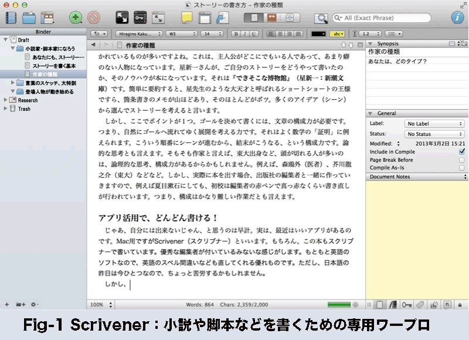
書き方にいろいろな種類があったり、１章６０ページだとか、その内訳は、さらに４分割すると分かりやすいとか、「３つの事実と１つの結末」で構成するとか、まぁ、言うのは簡単だけど実際にやるのは難しいかと思います。特に分量をコントロールするのは大変です。また、文章が長くなるにつれ、最初に書いたことと後で書いたことに矛盾が生じたり、けっこう大変です。
それらを一発で解決してくれる、いいアプリがあります。Scrivener（スクリブナー）といいます。Windows版とMac版があります。もちろん、この本もスクリブナーで書いています。優秀な編集者がついているみたいな感じがします。もともと英語のソフトなので、英語のスペル間違いなども直してくれる優れものです（ただし、日本語の機能は今ひとつなので、ちょっと苦労するかもしれません）。
なにができるのかというと、例えば思いついたシーンを適当に書いておきます。後で、このシーンが頭に来て、こっちが後ろだと、どうかな？ というように、書いた文章を１つの塊として扱いながら、全体を構成してゆくアプリです。シナリオの世界では「箱書き」と呼ばれ、ストーリーを面白く、立体的にするための手法として有名です。日本の小説ではあまり使われないかもしれませんが、シーンをブロック（箱）としてとらえると、長編小説を書く時に非常に効率よく書けますし、論理矛盾が起きにくくなるし、ストーリーが面白くなっていきます。
また、各シーンの文字数も自動計算してくれます。しかも、このシーンは１万字で書こうなどと目標を設定することができて、今、その目標に対してどのくらい書き進んだのかなど、進捗状況も分かります。さらに、章ごとに何文字書いているかというトータルの集計もしてくれるので、全体のバランスをみるのにも役立ちます。
詳しくは、後の章で詳しく解説していますので、ご参照ください。
□ 第二項 一太郎も、ちょー優れもの！
Scrivenerが西洋人らしい論理的な文章の構築に適していることは、なんとなくご理解いただけたでしょうか？ でも、自叙伝のような作品はあまり構成を凝る必要がないかもしれません。とりあえず頭からじっくり書きたいという人もいるでしょう。そんな場合には「一太郎」がオススメです。縦書きで書くことも可能です。さらに、ルビをふることも簡単なので、小説には最適です。もちろん、Scrivenerのように章ごとの管理も可能で、章の入れ替えもできます。小説や書籍としての体裁を整えるには、やはり「一太郎」のような国産ワープロが楽だと思います。しかも、Kindleで販売するために必要なファイル形式で出力できるので、作業が非常に楽です。
僕はScrivenerで書いて、それを一太郎で仕上げるという手順で仕事をします。この本も、そのやり方で書いています。実は「章」を設定し直すなど、二度手間な部分も多いのですが、今のところ、このやり方が一番楽です。いずれにせよ、Scrivenerと一太郎の使い方や連携の仕方は、最後の「第６章 仕上げて出版しよう」で詳しく説明します。
■ 第一節 言葉のスケッチでネタを増やせ！
□ 第一項 言葉のスケッチって何だ？
第１章で、「３つの事実と１つの結末」を肉付けすると説明しました。色づけの材料として「言葉のスケッチ」を使うということでした。画家は、絵を描く前にスケッチをします。作家は「言葉のスケッチ」をします。取材と呼ぶこと多いですね。しかし、実際にどんなことをしているかを紹介し、訓練するのが、この章です。
□ 第二項 言葉のスケッチでやるべきこと
肉付けに必要なことは、いつどこでなにを、という部分です。例えば、花を見て感動したとします。普通の人は、自分がどんなに感動したのかということしか気にしていません。ところが、
「あの花、奇麗だったよ」
と言われても、さっぱり分かりませんね。これだけでは小説のネタにはならないということです。
「俺の人生、波瀾万丈でさ、奥さんに３回も逃げられるし」
魅力的ですが、まだ小説のネタとしては不十分です。「３つの事実と１つの結末」における「事実」でしかないからです。いま求められているのは「肉」になる部分です。
【時代】【バブル】【タクシー】（３５６字）
１９８８年。バブルが最後の賑わいを見せていた頃。
夜中の１時、明治通りでタクシーに手を振るが、止まる車はなかった。タクシーの数自体は少なくないが、みんな緑のランプで、空車の赤ランプはすくない。赤ランプでも２車線の追い越し車線側を猛スピードで走り抜ける。手を上げたところで、見向きもしない。同じようにタクシーに手を振るサラリーマンもいるが、さすがに一万円札を振る奴はいない。
新宿の花園神社から代官山のアパートまで歩くうちには捕まえられるだろうと、アルバイト先である進学塾の先輩と歩く。６月の末日、夏の始まり、踊り疲れた汗で体が冷える。
「ケンちゃん、さっきのタクシーに、無理矢理乗ればよかったんだよ」
と、先輩に怒られた。やっと止まったタクシーに行き先を告げると、わずかワンメーターのために拒否されたのだ。
これは、バブル当時に飲み歩いて帰る途中のメモです。花園神社の祭で飲んで、そのまま帰ったときの景色を書いています。花園神社の様子は、別のメモ（言葉のスケッチ）になっています。
小説や脚本を書く場合、主人公が誰であっても、バブル時代を表現するときに使えそうですよね。バブルを知らない世代がバブルを書くと、多分、一万円を振ってタクシーを止めたとか、ボディコンの女性が酔っぱらっている様子を書くのではないでしょうか？ 前述では「空車のタクシーは追い越し車線を走っている」という部分がタクシー運転手の気持ちを代弁していたり、やっと止めたタクシーに乗る前に行き先を告げて逃げられたなど、主人公の人柄が出ています。
□ 第三項 言葉のスケッチの必要事項
先ほどのメモは「時代」を表現するスケッチでした。でも、中身には、無理矢理タクシーに乗れない気弱な男もスケッチされています。タクシー運転手が雑魚の客ではなく長距離の上客を捕まえるために必死で走っている様子もあります。もっとよく読み込むと、午前１時というと当時の終電が終わり、タクシーが一番忙しい時間でもあります。
もう１つ、スケッチを見てみましょう。
【怒り】（１１７字）
朝から忙しく、昼食が食べられなかった。蒸し暑い。
夕食、ファミレスは混んでいて、騒々しい。
生物は誰かと一緒に食事をする。
だが、自分の食べものを他人と比較し、損得を常に考える。
自分が少なかったりすると、怒りを覚える。
非常に分かり易いスケッチですね。スケッチは大きく分けて「景色・時代・見えるもの」「感じるもの」「喜怒哀楽」で分類します。これは「怒り」のメモです。もう１つ、スケッチをお見せします。
【怒り】【恐怖】【冷静】（８２９字）
蒲田の駅前。夕方。パチンコでちょっとだけ出たので、松屋で牛定を食べる。
隣に、あきらかにヤクザの２人組が座る。僕のすぐ隣には背広を来た男。４０歳くらいだろうか。その向こう側には、トレーニングウェアを来た２０代後半の男。明らかに挙動不審。顎を引いて上目遣い、辺りを警戒している。僕の隣の男を兄貴と呼ぶ。とりあえず、敬語。２人も牛定。
店員が牛定を僕に運んでくる。それをトレーニングウェア男が睨みながら目で追う。兄貴分が、よしよしと頷くと、トレーニングウェア男があごを突き出すように首肯し、うつむく。
店員が、牛定を他の客に運ぶと、またにらみつけている。兄貴分はよしよしとなだめる。
そしてやっと、２人組に牛定が運ばれてきた。トレーニングウェア男は待ってました、という顔で兄貴分を見る。兄貴は、いいぞ、と一言。トレーニングウェア男は、いただきやす、とぶつぶつ言う。
と次の瞬間！
「おい、この野郎、てめぇ、俺のことバカにしてんのか！」
と店員に叫び始めた。
「殺すぞ、この野郎、睨めてんのか！」
「は、な、なんでしょうか？」
若い店員がおびえて、遠くで直立してしまう。まわりの客も硬直して、箸が止まり、視線をそらす。
ぼくは、今にも暴れ出しそうな男を兄貴分の肩越しに凝視していた。そして店内を見渡した。
「おい、しょっぺぇのが、なんで俺だけ少ねぇんだ！ しょっぺぇのだよ。お前、この前も俺のだけ、しょっぺぇの、少なくしただろ！」
なんのことだろう？ しょっぺぇの。
男は、サラダを指差して立ち上がり、カウンターを乗り越えようとしている。
ああ、なるほどね。
ぼくが妙に納得していると、隣の兄貴分が冷静な声で、
「まぁまぁ、座んな」
となだめると、ハイと言って、男はとりあえず座る。
「兄ちゃん、悪いけどな、もう少し、その白い奴、かけてやってくれるかい。悪いね」
「兄貴、ありがとうございます」
それでトレーニングウェアの男は静かになった。
１９８６年のスケッチです。当時の松屋は、店員がドレッシングをかけて配膳していました。今は客が自分でかけますよね。もしかしたら、この事件がきっかけで、ドレッシングや焼き肉のたれは、お客が自分でかけるようになったのかもしれません。
このスケッチには、４人の感情が綴られています。１人はもちろん頭のおかしいトレーニングウェアのチンピラです。薬物中毒かもしれません。自分だけ虐げられているという被害妄想ですね。でも、兄貴分には忠誠を誓っているのか、完全に服従しています。犬みたいですね。
もう一人は兄貴です。チンピラの行動をすべて分かった上で、その場をうまくコントロールしています。店員や周りの客に迷惑をかけたことを、上手に謝っています。かといって、頭のおかしい子分を嫌うわけでもなく、叱る訳でもなく、大きな人間に見えます。
３人目は店員です。いきなり怒鳴られ、震え上がります。世間一般の目を象徴しています。
４人目は、スケッチを書いている本人です。冷静です。ヤクザ２人の言葉の全てを覚えていますし、客の顔も覚えています。だからスケッチできたのです。
さらにもう１つのスケッチです。
寒い日と暖かい日が交互にやってくる。
サクラの開花も宣言され、風の強い日が時折ある。
そんな本日、社の駐車場に車を停め、農業会館の交差点で信号待ちをしていると、雀の泣き声が耳に飛び込んでくる。昨日までは全然聞こえなかったのだが、どこからか一家でやって来たのか、雀の大きな声が聞こえるのだ。きっと仲間同士、呼び合っているではないだろうか？ そのくらい、春の気候になったということか？
すると、前方の緩い上り坂を今時珍しいワンレングスの髪の女が登ってくる。足はガードレールに隠れて見えない。しかし、あの髪型ならボディコンしかない。と思って信号待ちをしている。女が坂を上り切って、やはり、ボディコンだ。年は３０代だろうか？ まさか４０代じゃない。彼女も着物の小生をちょっと認めて、横断歩道で向かい合う。そして信号が青になりすれ違う。振り向いてみると、女の丸い形のいい尻が紫のボディコンを形作っている。そして大き目のパンティーライン。やはり４０代か？
季節の変わり目も、スケッチのしがいがありますよ。いつもと同じ通勤のみちのり、日本の季節は急に変化をみせてくれます。これは２０１３年３月１９日の朝１０時です。昨日まで居なかった雀が急に大声で鳴き始めたんですね。そこまでは自然観察ですね。ここからが作家の仕事。そういった季節の変わり目には、人の行動も変化します。とくに女性は敏感ですね、見習いたいと思います。しかも、今回はワンレン・ボディコンという懐かしい服装が目の前に飛び込んで来ました。このスケッチも、１つの事実が描き込まれていることにお気づきでしょうか？ そう、言葉のスケッチに慣れてくると、自然に３つの事実を書き込むようになります。１つめは暖かい日と寒い日が交互にやってくる＋桜の開花。１つ目が雀が町に帰ってきたということ、３つめはボディコンの女性です。このくらいのスケッチになっていると、コピー＆ペーストで小説になりそうですよね。
□ 第四項 喜怒哀楽のスケッチを充実させよう
前述のように１つのスケッチに複数の感情が含まれることがほとんどです。職業作家たちは、複数の感情が入り交じった「感情のスケッチ」をたくさん持っています。それをそのまま使うこともあれば、丁寧に分解してから、別々に分類することもあります。これがネタ帳とよばれ、オリジナルシーンを作るときの材料にしています。使い方は、こんな感じ。映画では、監督から「ここで主人公を泣かせてほしい」などと注文がきます。それに応えるとき、ネタ帳をひらいて使えるものを捜します。
さて、スケッチの実際ですが、とりあえず、心が動いた時、その時の風景やそこに至るまでの出来事をメモにします。例えば昼ご飯が旨いと感じた時、朝起きたのは何時で、天気はどうで、午前中に何をして、そして、どんな場所で何を食べたかを記録します。それを読者に読ませると、自分が感じたこととほぼ同じ感情が読者に芽生えます。
ぼくはこれをシナリオセンターで習いました。１９９２年くらいだと思います。当時はまだWindowsすら珍しい時代だったので、言葉のスケッチは、大学ノートに書き溜めるようにと指導されました。つまり「喜」のノート、「怒」のノートという具合です。でも、そんな４分類に入らない感情もあるので、そのうちにノートはぐちゃぐちゃになり、雑多なネタ帳になってしまいました。
今はパソコンがあるので、簡単にスケッチができるし、分類も自由自在です。
ぼくのネタ帳は、Evernoteというアプリです。
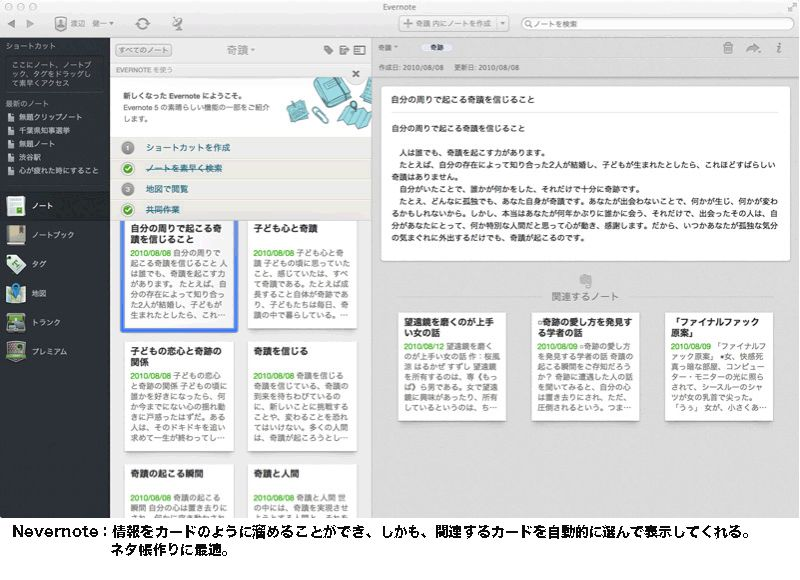
このEvernoteは無料で使えます。有料バージョンもありますが（広告が出なくなる等の違い）、物書きは無料バージョンで大丈夫です。
使い方は、説明書や専門書籍に任せますが、僕の使い方を紹介すると、まず、感情別のノートブック（カテゴリー）を作ります。「喜」の大学ノートを作るみたいなイメージです。その中に言葉のスケッチを書きます。「題名」と「タグ」が付けられます。題名は「サラリーマンを見て嬉しかったこと」のように書いています。「タグ」とは、スケッチの中に登場する他の感情とか、登場人物の種類：例えばサラリーマンとか水商売の女性とかというようなことです。
ネタを捜す時には３つの方法を使います。
例えば「喜び」を捜すには、「喜」のノートブックを開きます。そこには、上の図のようにタイル状にネタが並びます。
一方、人で捜す場合は「女」タグで検索します。各ネタには「人」のタグや「場所」のタグ、「季節」のタグなどを付けておくので、同じタグが貼られたネタがタイル状に表示されるわけです。すると、同じ「女」のタグで、喜んでいる女、悲しんでいる女、ふざけている女などなど、いろいろな女性が出てくるわけです。
そうやって、「３つの事実と１つの結末」の肉付けのためのネタを見つけ出すのです。
他の作家さんだと、名刺サイズのカードに記述している人もいます。前述の星新一さんがその一人ですね。図書カードみたいなものを使っている人もいました。
カードのいい所は、トランプみたいに混ぜて適当に抜き出すことができるところです。前の章で、起承転結の「転」で「恋人」を登場させました。意外な組み合わせを使うことで小説は面白くなります。そのためには、カードにして適当に並べるというのが、実は非常に面白い文章を生むことがあります。「３つの事実」のために、適当に選んだ３枚のカードで文章を作ってみるのも、１つの作風です。
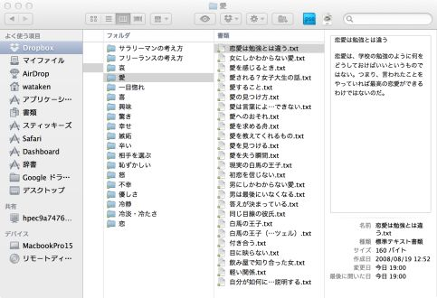
これはEvernoteを使う前の僕のネタ帳の一部です。タグのない時代には、分類が増えてしまし、検索が面倒でした。
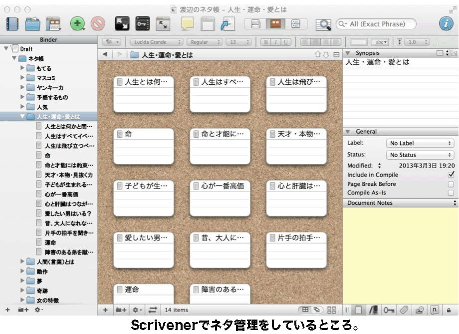
さらに、前章で紹介した執筆用アプリScrivenerでも、ネタ管理ができます。このようにタイル状にネタが並びます。右上の検索機能を使えば、全ネタから必要な情報を抽出することができます。
いずれにせよ、どれだけ沢山の言葉のスケッチをして、それを効率よく使うかというのがポイントですね。僕はEvernoteとScrivenerを使い分けていますが、Scrivenerだけで執筆する方が効率的かもしれません。僕はアプリに関してはまだまだ研究途中なので、もっといいアプリがあるかもしれません。ただ、道具（アプリ）に囚われるのではなく、ネタを沢山集めて使うというのが目標です。まずは言葉のスケッチをやってみることにしましょう。
■ 第二節 言葉のスケッチの書き方
□ 第一項 言葉のスケッチの初心者用フォーマット
言葉のスケッチですが、作家それぞれで中身は違うようです。ただ、初めての場合、何を書いていいのか困るでしょう。簡単なフォーマットを作ってみました。
言葉のスケッチのフォーマット
１：感情
２：日時（と自分の年齢）
３：場所と天気
４：内容
５：自分の気持ち
以上のフォーマットで、毎日１つか２つ、書き溜めてみましょう。そして、喜怒哀楽のそれぞれが５つを超えてくると、おそらく、小説らしい文章が書けてくるのではないかと思います。
感情のスケッチができてくると、普段書く文章が小説風になっていきます。つまり、言葉のスケッチを行うこと自体が、文章の練習になります。また、溜まったネタを並べて見ると、自分が何に興味があるのか、その傾向がよく分かります。僕の場合は「奇跡」「愛」「性」という３つの項目に偏っていました。この偏りを見れば、自分がどんな作品を書くべきなのかが分かってきます。ただし、興味があることは「分からないこと」の裏返しでもあるので、いいものが書けるまでには時間がかかるかもしれません。
また、実際に生活や仕事をしながらメモを取る（スケッチ）するのですから、前述の全部の項目が埋まらないのが当たり前だと思います。いずれにせよ、自分があとでそれを思い出せるかどうかが重要です。ひとまず、僕がどんなスケッチをしてきたか、いくつか紹介しましょう。いずれも２０代で書いた、古いものです。たぶん、皆さんと同じくらいの執筆経験時代のものです。
【ノストラダムスの奇蹟】
ノストラダムスは、彼の時代にどのように思われていたのだろうか？
現在でいえば、どんな地位や職業なのだろう。
私は、小説家だと思う。数多の本の中から、本物を探り当てることはできるのだろうか？ 探り当てた本が予言なのではないだろうか。
【他人の目に見て、ばかげていること】
子どもの心に奇蹟が隠れている。
子どものような気持ちで行動することは、時として他人には馬鹿げているように見えるが、実はそのことが奇蹟に触れる最大のチャンスであることに気づかなければならない。
テレビの中では、タレントたちが子どもっぽいことを大まじめな顔をしてやっている。これは無意識のうちに子ども心の奇蹟を引きだそうとしているわけだ。
【出会いの奇跡】
奇跡が起こる瞬間で一番多いのはどんな場面なのだろうか？
キリスト教の奇跡でいえば、マリア像が泣いたとか、病気を直したというようなことが奇跡として捉えられている。
しかし、ごく普通の人間にとっての奇跡とはなにか。たとえば恋愛に正しいということがあるとすれば、自分が電話をかけようとした瞬間に相手から電話がかかってくることがある。これは恋の奇跡である。
人が、ある出来事を奇跡と思うかどうかは、実は曖昧なのだろう。偶然など思うかもしれないし、必然だと思うかもしれない。
ただ、その奇跡が起こる瞬間には、自分一人ではなく、誰かがいるのだ。その場にいるかどうかではなく、川の流れ、そよぐ風を通して人と人がつながっている。そのことを感じられるかどうかが、実は感性と呼べることなのかもしれない。
【可能性のある奇蹟】
２つの予感があるとき、どちらの奇跡がより身近で生じやすいかと考えがちである。たとえば運命の人は、右と左ではどちらにいそうかと思案するようなものだ。
つまり、奇蹟が起こるであろう可能性を考え、計算するようなものだ。しかし、奇蹟の気まぐれを計算できるのだろうか？
いや、もっとよく耳を澄ませ、神経を研ぎ澄ませば、可能性ではなく、確実なのはどちらなのかがわかるはずだ。
【喜びの瞬間】
自分が喜べる瞬間がいつ訪れたのかを日記にすると、それは普段とは違う何かを受け入れた瞬間から始まっているということに気づく。
もちろん、喜びが向こうからやってくることはある。たとえば予定になかった飲み会に急遽参加してみると、そこに今まで待ちわびていたような出会いがあるというようなものである。
【奇跡が起こる瞬間】
往々にして、こうしたらこうなる、という類の人間の行状では奇跡は起こらない。どうしてそうなったのかわからないというようなことが奇跡なのだが、どうしてそうなる、の前に、その前兆ともいえる奇跡の芽を優しく育てたり、その芽の存在に偶然気づくようなことなのである。
つまり、奇蹟を自ら見つける努力や、見つけた奇蹟を育てる努力が必要だ。見つける努力というのは、たとえば目の前に現れた新たな友人が、実は奇蹟そのものではないかと思うこと。棚からものが落ちるということを、何かの前兆だと思うことだ。奇蹟を育てるというのは、気づいた芽を大切に思うことだ。そして、そのことに挑戦してみたり、参加してみたりすることなんだ。
【奇跡とは】
奇蹟とは、これまでに起こったことのない出来事のことで、それは普段のたわいのない出来事の中に忍び込んだ神の技なのだ。だから、ちょっとした変化や新しいことを見つける努力をして、その変化を大きくなるように育てなければならない。
【奇跡とは２】
奇跡とは、いつもとは違った出来事である。いつもと違うということをしっかり認識しないと、ある人は、風変わりな出来事として避けて通ってしまうかもしれない。
【奇蹟と人間】
世の中には、奇蹟を実現させようとする人間と、それを阻止しようとする人間がいる。
「今までにそんなことはやったことがない」
ということは、明らかに奇蹟を阻止する人間の言葉なのである。「あなたの今までの実績を教えてください」
というのも、実は奇蹟の芽を摘み取る言動なのである。そんな些細なことが、弱々しい奇蹟の赤ん坊をこの世から抹殺している。
若いときのメモなので、観念的で、ネタとしてはちょっと使いにくいですね。「骨」しかなくて、肉（目で見たもの、耳で聞いたこと）がほとんどありません。しかし、これでも書かないよりはずいぶんましです。
最近のスケッチはこんな感じです。
【２０１３年１月２９日 午後４時】
渋谷駅の地下改札で、柱に寄りかかり、時間調整をしていた。
ちょっと離れた壁際に、外国人かハーフか、奇麗な女性が、大きなスーツケースを置いて立っている。
誰かと待ち合わせなのだろうか？ 時折、あたりを気にしている。
こんなとき、ナンパでもして、声をかけ、道玄坂へ、などと妄想してみる。
彼女もぼくと同じように暇なら、付いて来るかもしれない。
などと考えていると、知り合いから電話が入るが、同じ名字の別人への間違い電話。
しばらく、歓談などして電話を切る。
すると、先ほどの彼女が自分の目の前に立っているではないか。
ぼくの視線の真ん中に立って、ゆっくりあたりを見回している。
声をかけようか。
ぼくはしばらく考えた。
そうしている１分ほどの後、彼女は僕から遠ざかり、改札口近くにある、タウンマップを手にとり、パラパラ。
そして、そのまま道玄坂方向の出口へ向かっていった。
さすがに、肉が書かれています。これだと、このまま小説にできそうです。
こんな風に、みなさんも、とにかくスケッチしてみてください。たぶん、FacebookとかMixiとかTwitterに書くのと同じようにできると思います。
そうそう、最近、僕はFacebookにネタを公開したりしています。つまり、ネタを人に見せて、その反応でいいネタか悪いネタかを判断します。
正直に言います。僕は女性週刊誌の記者やパソコン雑誌の記者、書籍は15冊以上書いています。ですから、どうかけば読者がどうよんでくれるか、何となく分かります。みなさんは、まだ、分からないことが多いと思います。なので、まず言葉のスケッチをして、それをネットで公開して、反応を探ることをオススメします。
□ 第二項 実際に言葉のスケッチを書くコツは？
いろいろと言葉のスケッチについて説明してきましたが、いかがですか？
書けそうですか？
書ける人は、どんどん書いてみてください。
でも、書けない人もいるのではないでしょうか？
これまで、いろいろな人を指導してきて、なかなか書けないという人が少なからずいました。どういうタイプの人かというと、まじめ過ぎる人です。きちんとしたフォーマットを作ってあげたこともありました。フォーマットがあれば書きやすいですよね。たとえば、最初は日時、次に場所、次に見えた風景、次に人、というように順番に穴埋めするわけです。しかし、実際には、こういったフォーマットで書くと、あとで使いにくいのです。
では、どうすればいいの？ 前述の僕の若いときのスケッチを見直してみましょう。けっこう、適当に書いています。風景がぜんぜん無いものも多いし、３つの事実なんてぜんぜん盛り込まれていないもの多い。じゃあ、どうすれば？ ええ、適当でいいんです。とにかく、そのときの気持ちが蘇るだけの情報が書き込まれていればいい。何本も書いているうちに自分のスタイルができてくると思います。僕はそれを期待してるのです。試行錯誤することが作家になる訓練なのです。とにかく、日記のように適当でいいからどんどん書きましょう。コツは、自分の内面よりも外界を多く書こうと思うことくらいです。
■ 第三節 週刊誌記者の取材方法
□ 第一項 取材も大切
日々の生活の中で言葉のスケッチをするのは、慣れると簡単だし、楽しいものです。しかし、書きたいことが決まって書き始めてみると、いろいろ調べないといけないことが増えます。最近の作家さんはWEBで検索して書く人も多いですね。もちろん、WEBは強力なツールなので、検索する技量があればかなりいい取材になると思います。
しかし、自分でその場所に行って取材すると、「肉」になる部分がたくさん手に入ります。記事になったり本になっていることは、その部分が欠如していたり、その作家の味付け（フィルターを通したこと）になっていて、ネタになりにくいものです。でも、取材に行って、そこにいる人に話を聞くと、それがたとえ間違った情報であっても、小説を書く上ではかなり素晴らしいネタになります。
たとえば「バブル時代」を書くとしましょう。
前章で出てきたスケッチをもう一度見てみます。
【時代】【バブル】【タクシー】（３５６字）
１９８８年。バブルが最後の賑わいを見せていた頃。
夜中の１時、明治通りでタクシーに手を振るが、止まる車はなかった。タクシーの数自体は少なくないが、みんな緑のランプで、空車の赤ランプはすくない。赤ランプでも２車線の追い越し車線側を猛スピードで走り抜ける。手を上げたところで、見向きもしない。同じようにタクシーに手を振るサラリーマンもいるが、さすがに一万円札を振る奴はいない。
新宿の花園神社から代官山のアパートまで歩くうちには捕まえられるだろうと、アルバイト先である進学塾の先輩と歩く。６月の末日、夏の始まり、踊り疲れた汗で体が冷える。
「ケンちゃん、さっきのタクシーに、無理矢理乗ればよかったんだよ」
と、先輩に怒られた。やっと止まったタクシーに行き先を告げると、わずかワンメーターのために拒否されたのだ。
この当時の学生はどんな姿だったでしょうか？ 今では「バブル入社」などと言われて、贅沢三昧で楽をしてきた世代に思われています。しかし、実際は違います。バブルで儲かっていたのは、その時に社会人だった人たちです。しかも、その時に自由にお金が使えた世代。つまり、団塊の世代です。当時の学生アルバイトの時給は５００円程度。バブルの前に「丸井ブーム」というのがあり、学生は丸井カードという今でいうクレジットカードを作らされ、高い服を買わされていました。それは借金ですから、当時の学生は安い時給でアルバイトを朝から晩までやっていました。なにせ、リーバイスの５１２が８０００円でしたから。
さらに１９８８年、同時のガソリン代は、２０１４年と同じくらいで１リットル１４０円程度。ドル円の為替も１４０円くらい。海外製品は非常に高かったのです。そして、当時、ファミレスが誕生しました。夕食が１０００円を超えました。当時の学生食堂は１４０円でカレーライスが食べられた時代です。要するに、学生は貧乏だったのです。もちろん、２０１３年時点の学生が苦労しているのは、僕の娘が２０歳なのでよくわかります。つまり、バブルと今は、よく似た経済だったと思います。ちなみに、大卒初任給は１５万円〜１８万円くらいでした。
ということを知ってバブルを書くのと、知らずにWEBの写真やWikiを参考に書くのでは、ずいぶんとちがうはずです。
僕が昭和４０年生まれなので、僕より上の世代、学生運動のことを書こうと思うと、けっこう大変です。学生運動に参加していた人と、ノンポリというか、あまり熱心ではなかった（ちゃんと大学を卒業できた）人では、同じ時代でも語ることが違ってきます。知らないことは知らない、というつもりで書かないと、けっこう、恥をかきます。
そこで、僕が連合赤軍について取材した話を紹介しましょう。２０１２年の取材です。
千葉県の九十九里海岸の南端、上総一ノ宮にある民宿の主人の川越さんは、連合赤軍の人たちより、ちょっと年上の世代です。故大島渚監督、故若松孝二監督と同世代で、彼らと交流も会った人です。連合赤軍にも属していたそうです。
川越さんに連合赤軍とはなんだったのか、それを聞きました。というか、本当は彼の民宿でホラー映画を撮っていて、プロデューサーだった僕は、夜中まで撮影して迷惑をかけている宿の主人である川越さんの酒の相手をしていたというのが真相です。
さて、連合赤軍はハイジャックや浅間山荘事件、総括事件など、過激な活動で知られています。なぜ、エリートである頭のいい大学生が、そんな凶行へ走ったのでしょうか？ この疑問を僕は様々な人に投げたのですが、誰も上手い説明をしてくれませんでした。
しかし、川越さんの話は目から鱗！
連合赤軍の中心メンバーが大学生になった頃、当時の若者の指導者的な位置に居たのが大島監督や若松監督だったそうです。彼らは、連合赤軍のメンバーとなる一年生を集めて、様々な過激な考え方（生き方）を見せたといいます。それは、監督たちにとっては、後に映画にするためのことだったらしいのですが、１年生のメンバーはそれが世界の全てだと思い込んでいったというのです。どんな思想だったのかは、特に若松監督の作品に残っているといいます。
当時、川越さんは美大生で、大学を辞めて銀座の水商売へ進んだといいます。商売が上手だった彼は、銀座と大阪にクラブを持つようになり、かなりの現金を稼いだといいます。彼が大阪の店に行っている時に連合赤軍のリーダーが銀座の店にやってきて、雇われママに、「川越さんに許可を貰っているから」と騙して、当時のお金で一ヶ月の売上５００万円を持って行ったそうです。
それから数日後に起こったのが「テルアビブ空港乱射事件」です。
川越さんによれば、
「俺の金で機関銃を買って、あんなことやりやがった。いずれにせよ、連合赤軍の若いメンバーは大島監督と若松監督に影響され、いや、騙されて、あんなことになってしまったんだ」
と言っていました。
この取材メモの中で、作家として重要なことはなんでしょうか？ 歴史学者なら、何年の何月に何が起こったということが重要でしょう。しかし、作家に重要なことは、その人物しか口にしない言葉です。つまり、カギ括弧の中身だけが真実です。真実という意味は歴史的に正しいということではなく、川越さんらしい言葉、川越さんしか言えない言葉です。川越さんは、連合赤軍の女性たちのことについても、いろいろな思い出を語ってくれました。
「永田洋子は、死刑になるような女じゃないよ。あの子が一番赤軍らしくなかった。素朴な女の子だよ。みんな彼女のせいにしちまったんだ。」
と涙ぐんでいました。
もちろん、僕とに二人で酒を飲みながらの話なので、どこまでが正しくて、どこからが主観なのかはわかりません。しかし、彼にとっての真実こそが、小説では重要です。歴史としての真実は、別の取材で補正すればいいのです。
□ 第二項 カギ括弧を聞き出す
僕は「女性セブン」にいました。ポストも少し書いています。週刊誌では、取材者の言葉、つまりカギ括弧を見出しに使います。その人しか言わない言葉こそが、すべてのストーリーを代表するのです。
僕たち記者は、その人しか言わないカギ括弧が出るまで、何時間でも取材をします。先ほどの川越さんの話も、「連合赤軍は、大島と若松に騙されたんだ」という言葉が出るまでが、１つの勝負でした。
「連合赤軍って何だったんですかねぇ？」
これまでも、川越さんは、何度となく、その問いを繰り返し聞かれたんだと思います。
そして、僕も同じように何度か繰り返して聞くうちに、
「大島と若松がいけないんだよ」
とポツリと言い出したのです。
「あいつらが居なければ、連合赤軍なんて生まれなかった」
こういう言葉を引き出すのが、「取材」というものです。懺悔みたいなものです。
僕は大島渚監督は知っていましたが、若松監督のことはほとんど知りませんでした。しかし、川越さんは、むしろ、若松監督とのエピソードをいくつも話し始めました。残念ながら僕には知識がなく、ほとんど覚えられませんでした。なぜなら、酒を飲む席で、メモ帳すら持っていなかったからです。
しかし、その話を掘り下げているうちに、なんでそんなに赤軍の若いメンバーをよく知っているんですか？ という問いに変わりました。それで出てきたのが「銀座の売上」でした。自分がテロ活動の資金源になっていたと打ち明けたのです。
よく考えてみましょう。赤軍のメンバーが、急に銀座の店に現れてお金を持ってゆくなんて不自然ですね。つまり、メンバーは頻繁に川越さんの店に来ていて、雇われママも顔見知りで、オーナー不在でもお金を渡すだけの間柄だったということです。つまり、資金提供は、その時だけではなかったのでしょう。裏返せば、川越さんは、連合赤軍のメンバー格だったということかもしれません。
しかし、川越さんが僕に打ち明けたのは空港乱射事件の資金だけです。あれは、パレスチナの捕虜を救うという題目で行われたテロで、川越さんにとっても、お金の使われ方としては納得できたということかもしれません。空港乱射事件の３ヶ月前には浅間山荘事件、その前年はリンチ事件、その２つの事件があったのに、川越さんは連合赤軍と交流があったのですよ！
□ 第三項 取材しないと分からないこと
いかがでしょうか？ 取材をしないと分からないことがいっぱいありました。
そこで、皆さんが取材する場合のコツを紹介しておきます。
取材で重要なことは、実は下調べをあまりしないということだと思います。言い換えると先入観を持って取材をしてしまうと、自分に都合のいい聞き方をしてしまいます。ニュース番組のほとんどが、テレビ局に都合のいい取材で構成されています。分かり易い例を挙げると、週刊誌の編集部には「芸能人棚」というのがあります。そこには、芸能人ごとのファイルがあって、怒り顔、泣き顔、笑い顔などの写真があります。スキャンダル記事には、その内容に合わせて芸能人棚から写真が使われます。酷い話、離婚の記事に、くしゃみをする寸前の顔が使われるというようなこともありました。
さて、何が言いたいかというと、世間で言われているステレオタイプな情報は、本当のことではないことも含まれています。それを見抜こうとするのが取材なのです。
□ 第四項 一般人の皆さんが取材するには
さて、僕は週刊誌の記者だったので、誰にでも取材ができましたし、いまでも取材することができます。ある意味で特別な立場かもしれません。でも、皆さんが取材するにはどうしたらいいのでしょうか？
簡単です。別に肩書きはいりません。「知りたい」という気持ちを見せれば、ほとんどの人が話をしてくれます。もちろん、お役所や大きな会社は相手にしてくれないかもしれません。でも、ほとんどの人は話してくれます。
では、何と言って聞けばいいのか？
「すみません、連合赤軍について知りたいんですけど。興味があるんです。小説を書こうと思っているんです」
で十分です。
相手に対する尊敬と感謝の念が、それで十分です。
■ 第四節 言葉のスケッチ活用術
□ 第一項 オリジナルキャラクターを入れ込む
さて、これまでの言葉のスケッチは、私小説的な書き方の手本みたいなものです。言葉のスケッチや取材を繰り返して「肉」の盛り込み方ができるようになると、次はオリジナルキャラクターの入れ込みです。魅力的な主人公を作り上げることで、物語は面白くなるものです。
では、オリジナルキャラクターを主人公にするのはどうしたらいいのでしょうか？
基本は今までと同じです。まず、３つの事実を並べます。そして１つの結末を考えます。このときに、オリジナルのキャラクターを入れ込んでみましょう。
１：３月初旬、やっと暖かくなって、毛布が要らなくなった日曜日の朝。寝坊して起きたのは昼頃だった。なぜ、こんなに暖かいのだろう？
２：ふと見ると、我が黒猫がベッドの足下に寝ている。ああ、彼女のおかげで暖かいんだ。そう思うと、背広や部屋中に毛をまき散らす彼女も、やはり居てくれてこそ、我が人生なのだろう。
３：それにしても腹が減った。時計を見ると、なんと昼の12時だ。連日の仕事疲れか、昨夜の恋人の激しさのためか（いや、後者だ）、こんな時間までぐっすり眠っていたのだ。何年ぶりのことだろうか？ さて、ご飯を食べるためにベッドを出たいが、猫が起きてしまいそうだ。猫を起こすのは可哀想に思える。
４：それにしても猫の温もり、心地よい暖かさだ。そうか、今日の快眠は、この猫のおかげだったのか...。そう思いつつ恋人の残り香を捜すが、この部屋にはもうない。彼女との最後の一夜、彼女はもう戻って来ないだろう。そんなことを考えているうち、猫はいつの間にか足下から消えていた。
もうお馴染みの言葉のスケッチです。このままでは私小説です。主人公は自分、一人称の書き方ですね。ここにキャラクターを登場させましょう。
１：３月初旬、やっと暖かくなって、毛布が要らなくなった日曜日の朝。在原夢平が寝坊して起きたのは昼頃だった。
「なぜ、こんなに暖かいのでしょう？」
夢平は、まだ２０歳を超えたばかりだが、先祖伝来の家業を引き継ぐ当主でもあった。とはいっても、従業員がいるわけでもなく、女中が世話をしてくれるわけでもなく、いってみればフリーターみたいなものである。
２：夢平がふと見ると、彼の黒猫がベッドの足下に寝ている。
「ああ、おまえのおかげで暖かったんだね」
そう言うと、背広や部屋中に毛をまき散らす彼女も、やはり居てくれてこそ、我が人生なのだろう、夢平はそうつぶやいた。
３：それにしても腹が減った。時計を見ると、なんと昼の12時だ。連日の仕事疲れか、昨夜の恋人の激しさのためか（いや、後者だ）、こんな時間までぐっすり眠ってしまったのだ。
「何年ぶりのことでしょうか？」
夢平は起き上がろうと上半身を起こした。しかし、黒猫は夢平の足の上でいびきをかいている。ご飯を食べるためにベッドを出たいが、猫が起きてしまいそうだ。
「どうしましょう、起こすのは可哀想ですね」
４：夢平は、なにやら口の中で唱え始める。猫の眠りがより深くなる。
「これでよし」
と夢平は布団から足を抜いた。猫は起きない。夢平はそのまま台所へ、テーブルには食べ残しの豪華な食事があり、２つのワイングラスには赤ワイン。片方は口も付けられていない。振り向いて寝室をみると、昨夜、彼女が羽織っていた真っ白なシーツは床に丸まっている。
「もう、戻らないんですね、祐子さん」
夢平は手つかずのワイングラスをとり、一気に飲み干し、乾杯の合図よろしくグラスを掲げた。
「シュー！」
足下に黒猫がいた。牙を剥いて夢平をにらんでいる！
「あ、ごめんごめん。おまえに術をかけない約束だったね」
猫の真っ赤な口が夢平のすねをかじり、夢平が痛いと叫ぶと、猫の目が一瞬笑ったように見え、また、ベッドへ上り眠り始めた。
いかがでしょうか？ キャラクター設定というのは、けっこう手間がかかるもので、生い立ちや問題意識だとか、いろいろなことを考えておかないと誰だかわからない人になってしまいます。本章の冒頭で内館牧子さんの話をしましたが、主人公になる人物は、その年齢分の過去の出来事が必要です。それがないと、ぼんやりした主人公になってしまいます。
逆に言うと、子どもが主人公だと、けっこう楽に書けます。なぜなら過去の歴史が少ないからです。
□ 第二項 キャラクターを真剣に考えよう
新人作家の場合、キャラクターの作り込みが足りないことがほとんどです。主人公に起きるこれからの事件ばかりにエネルギーが裂かれてしまい、登場人物その人を魅力的にする過去が何もない場合がほとんどです。キャラクターを作るということはキャラクターの過去を考えることと同じです。
私小説であれば主人公は自分なので、自分の年齢と同じだけ過去があるから面白い話になります。しかし、架空の人物が主人公になる場合には、かなり具体的な過去を想定しておかないと、かなりのっぺらぼうなキャラクターになってしまいます。
逆の言い方をしましょう。キャラクターが面白くないと感じたら、キャラクターの過去をもう一度よく考えてみるといいでしょう。たとえば生まれ年を確定することで、見たきたもの、遊んだゲーム、音楽、流行った言葉など、骨だけだったキャラクターに肉が付いてきます。「３つの事実と１つの結末」の肉付けに似ていますね。ただ、自分と違う年代・時代のキャラクターの場合には、けっこうきちんと調べないと駄目です。嘘はすぐにばれます。
いつ、このキャラクター設定を行えばいいのでしょうか？
これは作家によってまちまち。冒頭でも紹介しましたが、内舘さんはストーリーを考える前だとおっしゃっていました。でも、ある程度の舞台設定がないと、登場人物を決められないので、現実的にはある程度のストーリーができてから改めてストーリー設定をすることが多いと思います。
ただ、あまりストーリーができすぎていると、キャラクター設定をした途端に、いろいろなところを書き直さなければならなくなります。それも作家の仕事といえばそうだと思います。このあたりの書き方は、脚本の作り方が参考になるとおもいます。第４章をご参照ください。
□ 第三項 歴史資料をそろえよう
時代劇の定番資料は、『江戸１０万日 全記録』（明田鉄男）がおすすめ。日記のように江戸でどんな事件が起こったのかが日付別に編纂されています。文化習俗を調べるなら「三田村鳶魚全集」（全２１巻）です。百科事典のように、江戸の出来事が書かれています。いや、言葉のスケッチです。物語調ですが、実際にあった出来事を分類してまとめてあります。
その時代ごとに、いい資料があると思います。どなたか、明治維新前後の資料、お持ちじゃないですか？
■ 第五節 ストーリーの定番アイテム
□ 第一項 使いやすい場面
ストーリーを書く場合に、よく使われる機能的な場面（シーン）があります。シナリオの世界では「寄せ玉」といったります。登場人物たちが初めて登場する場面では、「入社式」「入学式」「お葬式」など、大勢の登場人物が一堂に会する時にはよく使われます。「結婚式」もありますね。「同窓会」で１０年ぶりに再会したとか。人生の中でも誰かに久しぶりに再会するのは、そんな場面ですよね。
同じように、探偵小説では、大富豪が開く特別なパーティーに人が集い、そこで大事件が起こります。逆に、大事件が起こったから探偵と警部が山奥の村に呼ばれるなんてこともありますね。水戸黄門では、次の宿場に着いたときに最初に出会った娘が、悪代官にいじめられている旅籠の若女将だったとか、まぁ、要するに定番のシーン（アイテム）というのがいろいろあるわけです。
こういった定番アイテムは、効果的に使うべきです。読者や観客は、そういったシーンが出てくると、主人公が出てくるんだな、とか、ヒロインが出てくるんだな、と予想します。それを裏切らないことも人気作を書くときには重要です。逆に、期待させて裏をかくもの面白いですよね。
また、謎解きなどで、登場人物全員を１カ所に呼び寄せたいときにも、こういったシーンが有効です。しかし、こういったシーンは唐突であることから、読者をしらけさせることにもなります。使い過ぎは厳禁です。そのあたりは、次で説明します。
□ 第二項 魔法を使いすぎるな
作家が、ストーリーに詰まるとやりがちなのが「魔法」です。
「実は、犯人は空が飛べた！」
というように、作者の都合でこれまでとは関係ないことを入れ込むことです。
よくありがちなのが、主人公は特別な能力があって、東京に出ると芸能事務所にスカウトされ一気にアイドルに、なんて設定です。そんな人、ほとんどいないのです。まぁ、いてもいいのですが、そんな魅力や能力の持ち主が、ちょっとした失敗で落ち目になってしまう。こんなストーリーを、僕は何十本とみてきました。都会に出た瞬間に一目でアイドルになれると思われて芸能界入りするくらいの能力の人が、いったいどんな状況で落ち目になるのでしょうか？ つまり、最初の魔法が大きければ大きいほど、次のシーンが難しくなります。魔法に匹敵するだけの出来事を作らなければならないということです。
つまり、ストーリーを構築する上で、あまり特別な状況を与えすぎると、あとで論理破綻して、読者に逃げられるということです。そんなこと起こらないよ、と思われたら負けです。ワンピースのように、魔法の連続で、その魔法の過激さ具合を楽しむ作品もあります。多くはロードムービーというジャンルで、主人公が旅をする中で、次々と新しい状況（敵）に出会うというストーリーです。
実はロードムービーはもっとも書きやすいジャンルだと思います。
□ 第三項 伏線を学べば、すばらしいストーリーになる！
伏線はご存じですよね。読んで字がごとし、隠されたストーリーです。これが小説やシナリオの醍醐味であり、読者や観客が期待するものであります。ストーリーを全部読むと、最後に、あれもこれも伏線だったのか！ と思わせれば作家の勝ちですね。言い換えると、伏線をマスターした人がベストセラー作家になるんだと思います。
さて、伏線はどうやって作ればいいのでしょうか？ 僕も、それほど売れっ子作家ではないので、あまり上手じゃないので、とりあえず、伏線の考え方と入れ込み方の基本を紹介します。
まず、伏線とは、それ独自で単独のストーリーです。ストーリーといっても、「３つの事実と１つの結末」に近い、小さなストーリーもあれば、小説全体の裏側に脈々と流れる壮大なストーリーの場合もあります。ただ、いずれにせよ、メインのストーリーとは別に、もう１つのストーリーを入れ込む技術が習得する必要があります。最もわかりやすい作品を紹介しましょう。
映画『シックスセンス』（１９９９年、Ｍ・ナイト・シャマラン監督）はご覧になったでしょうか？ 観ていないなら、観てからこの後をお読みいただきたいと思います。完全にネタバレになりますので。
あらすじ
マルコム・クロウは、第一線で活躍する児童心理学者で、多くの子供を心の病から救ってきた。あるとき、マルコムのもとに１０年前の少年期にカウンセリングを施したビンセントという青年が現れ、「自分を救ってくれなかった」となじられ銃で撃たれてしまう。そして直後、彼が目の前で自殺したことで、実はビンセントを救えていなかったことを思い知らされる。
１年後、マルコムと彼の妻との間には隔たりが生まれていた。妻は別の男とささやかな愛情を育み、それに反して自分は省みられずに苛立つ日々が続き、自信を失ったマルコムは苦悩と悲しみに暮れていた。そんな中、マルコムはビンセントに良く似た少年、コール・シアーを担当することになる。コールを救うことができれば、ビンセントと、彼を救えなかった自分をも救えるかもしれない。必死になって受け入れて貰おうとするマルコムに、コールはやがて心を開き、隠していた秘密を打ち明ける。コールには、死者が見えてしまう「第六感（霊感）」があり、ずっと怯え続けていたのだ。この能力のために、コールは学校中の生徒や教師からは「化け物」と異端児扱いされ、事情を知らない母親ともすれ違い、うまくいかなくなっていた。
当初は懐疑的だったマルコムも、やがてコールの言葉を受け入れるようになり、死者がコールの前に現れる理由を共に探り始めるようになる。
（出典・Wikipedia ）
さすが、Wikipedia、うまいまとめ方ですね。このあらすじを読んだだけでも、主人公のマルコムの心理学者としての人生、妻との関係、霊感のあるコールの人生と複数のストーリーが混じっています。これだけストーリーがあれば、伏線を張るのは楽しい作業だと思います。
しかし、このあらすじ、実は映画の時系列を分解して、前後がぐちゃぐちゃなことにお気づきでしょうか？ 実は、皆さん、６・３・３の１２年間の学校生活と、もしくは大学も含めれば１６年間も、浪人や留年していればそれ以上の年月、このお手本のようなあらすじのまとめ方に毒されてしまい、ストーリーが書けない体になってしまっているかもしれません。皆さんの明晰な頭脳は、普段、物事を人物別とか項目別にまとめるのが上手になっています。それを分析といいますが、先のあらすじも、登場人物ごとにまとめられていて、全体像をつかむことができますよね。
ところが、作家の仕事は物事を時系列に従って考えるということです。そこで、次のあらすじを見てみましょう。
あらすじ２
主人公マルコム（ブルース・ウィリス）は、妻とパーティーに行った帰り道に暴漢に襲われて、翌朝、目覚めるところからストーリーが始まります。彼は、担当している小学生のコールの様子を見に行きます。彼はいつもおびえていて、逃げるように通学しています。友達と打ち解けられず、母親ともぎくしゃくしています。
そんな彼を見ているうち、マルコムは昔の思い出が蘇ります。昔、担当した子どもビンセントのことです。その思い出と、妻とぎくしゃくした関係が交錯します。
コールを診察しますが、コールはなかなか心を開かず、いつもおびえ、お化けが見えると言うばかりです。そんなとき、かつてのビンセントの記憶が、また蘇ります。実は、カウンセリングに失敗し、ビンセントは自殺してしまったのでした。あの事件があってから妻との関係がうまくいかないマルコム。コールを救えば妻との関係もよくなり、自分も救われるのではないかと思うのです。
と、こんな感じにあらすじを時系列にみてゆくことが大切です。
さて本題。伏線をみていきましょう。
● １：ファーストシーンの「暴漢に襲われる」（最大の伏線）
これは最大の伏線ですよね。びっくりしましたね！
次のシーンが朝の目覚め、これが絶妙です。わかりますよね。
● ２：おびえて逃げるように歩くコール（もう１つの伏線）
いやぁ、この演技、びっくり。なぜ逃げるように歩くのか、マルコムがコールに聞くと「お化けがいるから」と答えます。
● ３：ビンセントの記憶（観客を惑わす伏線）
ビンセントがどうなるのか、断片的に出てきます。これが伏線の王道ですね。ビンセントのストーリーは１本のはずですが、小出しに散りばめています。つまりマルコムとビンセントの物語はきちんと起承転結があり、それだけで短編になるだけのボリュームがあります。
● ４：妻との関係（最大の伏線を補う伏線）
これも絶妙です。妻はいつも悲しそうな顔をし、孤独です。その理由をマルコム目線では、夫婦の関係がぎくしゃくしている、と感じているのですが、本当は、ね。
● ５：マルコムとコール（伏線の合流地点）
マルコムがコールを診察するシーンで、コールが徐々に口を開き始めます。観客はコールに釘付けですね。しかし、これも上手。
さて、例示を続ければきりがありません。この作品の伏線は、マルコムを通して見たコール少年の心だと思わせておいて、実はコールが体験している心霊現象だったということです。つまり、メインのストーリー（マルコム目線）からサブストーリーだと思わされていた「コールの見ているもの」に逆転してしまう結末です。このどんでん返しのために、１～４の伏線が忍ばせてありました。実はもう１つ、コールの目の前に何度も出てくる少女のお化けという伏線もあります。これはコールが自立するための伏線ですね。
いずれにせよ、それそれの伏線は、単に読者への罠（地雷）を仕掛けておいて、後で炸裂するだけというような軽薄なものではなく、それぞれがきちんとしたストーリーになっているということです。
ポイントは、伏線になる小さなストーリーか完全に書き切ることです。それを箱書き（第４章「シナリオの書き方」で説明します）にして、シーンごとに分解して、メインのストーリーの中に入れ込むという作業になります。まぁ、そうはいっても簡単ではないですよね。これができるようになったとき、皆さんは豪邸に住んでいると思います。豪邸に住むためですから、伏線のためだけに１本書き上げることも必要でしょう。
□ 第四項 定番アイテムを入手せよ
さて、この章は「言葉のスケッチ」がテーマです。実は定番アイテムも言葉のスケッチに加えてほしいのです。つまり、どんなシーンが定番アイテムなのかを知らないと、自分でストーリーを書くときにお行儀の悪い書き方になるからです。ですから、特に映画やドラマを見ているとき、小説などを読んでいるときに定番アイテムを見つける訓練をした方がいいのです。定番アイテムを見つけたら、すぐにスケッチして書き留めることが肝要です。それから魔法にも敏感になる必要があります。魔法はストーリーの自然な流れに逆らうものです。しかし必要不可欠でもあります。ですから、上手に魔法を使う方法をマスターするべきです。
それでは、次章より、実践に入りましょう。
■ 第一節 映画のあらすじ覚えよ！
□ 第一項 ストーリー構築術を鍛えよう
「３つの事実と１つの結末」、そして、「言葉のスケッチ」を行うことで、ストーリーを作る基礎体力ができたことにしましょう。それでも、面白いストーリーを書くのはなかなか難しいものです。
そこでオススメの訓練方法を紹介します。それは映画を観て、そのあらすじを友達や家族に語ることです。
● あなたは、あらすじを何分で語れる？
まず、大好きな映画、もしくは最近観た映画を思い出してください。そのあらすじを誰かに説明してみましょう。
例えば２時間の映画だとします。
１：普通の人 ２分以内で説明終了
２：役者 自分の好きなシーンだけ語る！
３：脚本家 ３０分くらい語れる
４：小説家 １時間くらい語れる
同じ映画を観ても、ストーリーの構築能力によって、語れる時間が全く違います。
理想的には、２時間の映画を２時間で語る！
物書きになるのであれば、２時間の映画は２時間で説明する、それが理想的です。ただし、映画は映像なので言葉に置き換えると非常に長くなります。例えばたった３秒間のタクシーが通り過ぎるシーンでも、どんな道を何色の車がどんなスピードでどちらの方向へ走っていったのか、文章にすると何行にもなります。読み上げても３秒以上になるのは当たり前。ですから、２時間を実況中継しても２時間で語るのはかなりの苦労です。正確に、しかも、そんな細かいことをいちいち説明していると、聞いている人は眠ってしまいます。
実際にやってみると、最初のうちは５分喋れればけっこう頑張った方だと思います。それが１５分に伸びれば、物書きとしての力量が、かなりあると言えます。というのは、聞く方は３分は我慢してくれますが、それ以上は話が面白くないと聞いてくれないからです。
では、僕はどうでしょうか？ ２時間の映画を６０分〜９０分くらいで話しています。逆に言うと、そのくらい喋れるように映画を観ています。そのくらい喋れないような気がしたら、もう一度観直しています。
そして、ここからがポイント。ぼくが喋ると、面白くない映画が、超大作に聞こえてくるそうです。そもそも、僕は喋りながら涙を浮かべたり、ちょっと役者っぽく語るので、それもあるかもしれません。
しかし、いいでしょうか？ 映画がネタ（スケッチ）だとしたら、それを使った面白い話を作るのが作家の仕事です。自分で集めたネタでストーリーを作るのは時間がかかりますが、映画をネタにストーリーを作れば、ネタ集めの時間が必要なので効率がいいじゃないですか！
ちょっとだけ告白すると、ぼくの仕事にＣＭ制作があります。これは世の中の面白くない商品でも最高のものとして売らなければなりません。僕はそんな仕事をたくさんしてきました。だから、面白くするコツを知っているということです。ところが、それを小説にするのは難しいですね。日頃、僕が喋っていること、講演していることをそのまま小説にすれば、きっと大ヒットだと思います。でも、なかなか難しい。修行します。
しかし、みなさんは、ぜひとも映画を観て、それを友達や家族に聞かせてください。嫌がられなくなった時、たぶん、あなたの処女作が世の中に出るだけの力量がそなわっているはずです。なぜなら、僕は若い作家や脚本家にこの指導を行って、何人もデビューさせているからです。
□ 第二項 映画を語る場合に陥りがちなこと
映画のストーリーを話す場合、けっこうやってしまうのが、時系列がバラバラになることです。印象に深いシーンは、とかく先に喋ってしまいがちです。でも、映画のシナリオは、実に巧妙にできているので、時系列を変えてしまうと、とたんにつまらなくなります。簡単にいえば、推理もので結末を先に言ってしまうようなことです。じっさいに、映画のストーリーを誰かに話すと、話がなんども前後してしまいます。しかし、そうなっても狼狽えてはいけません。
もし、時系列を間違ってしまった場合、その時こそ、相手の表情や動作をよく見てください。そんなとき、意外な顔をするものです。なぜなら、つじつまが合わない話になっているので、相手は一生懸命に頭を使って話を理解しようとしています。その顔を見ながら、話を面白い方向へ持って行けばいいのです。
映画で時系列が間違うと、実はストーリーが別のものに変化します。つまり、時系列を間違った瞬間に、相手はその間違った時系列における結末を求めます。それを察知することができれば、あなたのストーリーは魅力的になってゆきます。
言い換えましょう。あなたが映画のストーリーを語る時、あなたの頭の中には、あなたが観た映画が等身大で入っているはずです。しかし、あなたが時系列を間違えた瞬間に違う話に変化します。それでも相手が望むような面白い話に戻せれば、これはストーリーテラーとして一人前だと言えます。要するに、バラバラにしてしまった映画のシーンをネタとして使って、面白い話に仕上げることができたということだからです。
そして、映画を語ることで、もう１つのアドバイスがあります。同じ映画を違う人にも語って下さい。人によって反応が違うし、あなたの説明も違ってきます。どのように話をすれば効果的なのか、何回か語っているうちに分かってきます。語っているうちに、自分はディテールを細かく話すのが上手だとか、全体のストーリーを説明するのが得意だとか、いろいろ分かってきます。
■ 第二節 いよいよ執筆！
□ 第一項 ショートストーリーを書いてみよう
では、実際に短い話を書いてみましょう。これまでの説明の中で４２７文字で小さなストーリーが出てきました。おさらいすると「３つの事実と１つの結末」ですね。これに基づいて、ストーリーを書きましょう。
● テーマ「初恋の切ない思い出」
さあ、このテーマで書いてみましょう。まずは３つの事実を捜して下さい。ちなみに、初恋を定義すると、自分からもしくは相手から具体的なアクションがあったものを初恋とします。つまり、ラブレターを書いたとか、もらったとか、チョコレートを渡したとか、そういうことです。それから、そんな初恋は３つまでチェンジ可能です。ご自分の一番いい思い出で書いて下さい。もし、初恋がない人は、他人の初恋でもいいですよ。なぜ、こんな定義をするのか、そう疑問に思った人は作家としてのマインドが向上しています。理由は簡単です。他人とって面白いのは、単に心の中にある初恋じゃダメだからです。他人がその時どうしたのか、それがドラマなんです。
皆さんが書いていると信じて、僕は弊社でアルバイトしていた美人のヒロミちゃんの初恋話をそのまま書いてみます。
１：小学校５年生のある日、ヒロミは忘れ物をした。「検便」だ。クラスのみんなが、教卓に検便の袋を持って集まってゆく。
２：隣の席は、ノリくん。背が低くて、カッコ悪い感じ。そのノリくんが、ヒロミが困っているのに気付く。すると、ノリくんが大声で、
「先生、俺、忘れてきちゃった、どうしたらいい？」
と叫んだ。クラス全員が、ノリくんを笑ったが、彼は頭をかいて誤摩化していた。
３：先生は「忘れた人は、明日持ってきなさい」と言った。それを聞いて、ヒロミは救われた気がした。そう思ってノリくんを見ると、鞄に検便の袋を隠すのが見えた。ああ、ノリくんはヒロミのために笑い者になってくれたのだ。
これがヒロミの思い出です。いい感じの思い出ですね。でも、かなりカッコ悪くて顔が悪い男の子だったらしいです。その後、ヒロミとノリくんは、付き合うことになったのですが、女友達は、なんであんなカッコ悪い男がいいの？ と不思議がったそうですよ。うん、なるほど。
さて、これを小説にしあげましょう。このままでは、まだ骨と皮っていう感じ。まだまだ肉がありませんね。日記風です。では、肉をつけて、さらに結末を考えましょう。
小学校５年生といえば、男女とも異性を意識し始める年頃だ。年齢にすれば１０歳である。この話の主人公ヒロミは、今でこそ、市内でもけっこう顔が知れた美人で、幼なじみの根本はるみはグラビアアイドルになったが、その根元よりもグラマーで美人だと、地元では評価が高い。
そのヒロミが５年生の時に、初恋は突然やってきたのである。
ああ、あんな恥ずかしい出来事から恋が始まるなんて。だが、その初恋が、ヒロミのその後を決めてしまったのかもしれない。
ヒロミは、忘れ物をした。顔が青ざめた。忘れたのは「検便」だ。
やばい、どうしたらいいのか？
忘れました、などと言えばクラス全員の視線が集まってしまう。クラスでも可愛い方だと自覚のあるヒロミとしては、こんなことで注目されたくない。
そう思っていると、クラスのみんなが、教卓に検便の袋を持って集まってゆく。ああ、あの中で入って、こっそり提出したかったのに。
ヒロミの顔は青ざめ、冷や汗が流れてきた。その隣の席はノリ。背が低くて、カッコ悪い感じ。彼は鞄をゴソゴソやっていたが、なぜかヒロミと目が合った。不思議そうな目でヒロミを見つめている。ヒロミは検便を忘れたことを気付かれないように、笑ってみせた。今考えれば、相当引きつっていたのかもしれない。
ノリといえば、お調子者で面白いが、服はいつも汚れていて、格好悪い。イケてない。ヒロミにしてみれば、顔を思い出しにくいタイプの一人で、これまでも数回しか話したことがない。
急にノリが大声を出した。
「先生、俺、忘れてきちゃった、どうしたらいい？」
と叫んだ。クラス全員が、ノリを振り返った。そして、笑い始めた。彼は頭をかいて誤摩化した。
「あはは、忘れちった！」
意地の悪い男子が、「検便ノリベー」とはやしたりしていたが、ノリは動じず、笑っているだけだった。
先生は「忘れた人は、明日持ってきなさい」と言った。
それでクラスは大人しくなり、同時に何人かが、ほっと胸を撫で下ろす姿があった。
ヒロミも救われた気がした。
そう思ってノリを見ると、彼が鞄に検便の袋を隠すのが見えた。ああ、ノリくんはヒロミのために笑い者になってくれたんだ。
それでヒロミは、ノリが好きになった。いや、感謝の気持ちが大きいのだが、５年生では感謝も好きも一緒だ。しかし、ここがヒロミのいい所なのだが、この日の放課後、ヒロミはノリにきちんとお礼を言ったのだ。ノリは、それも笑って誤摩化していた。それから中学生になるまで、２人は付き合っていた、ということにヒロミの記憶の中では、そうなっている。
（ここからが結末）
さてあれから１３年。ヒロミは２３歳になった。高校を卒業後、アルバイトや契約社員や、地元ではお洒落で有名なバーのバーテンをしたりしていた。そのバーにやって来たのが、私だ。当時、駆け出しの物書きで「初恋」をテーマに短編を書いていたのだ。
「ヒロミさ、初恋を教えてよ」
「えー？ 言いたくない」
と言ったが、初恋は大切なものだとか、初恋を隠す女は幸せになれないとか、いろいろ言って聞き出した。
「ノリくんっていうのよ」
なかなかいい男じゃないか、そう言ってやった。ヒロミは恥ずかしそうな顔をしていた。
「それで、ノリくんと、今でも会いたいかい？」
「えー、やだぁ。ぜんぜん会いたくない。だってカッコ悪いんだもん。嫌いじゃないけど」
おっと、男は初恋の女性に会いたいものだが、女性はそうでもないのか？ ということで、他の女性客に聞くと、みんな、別に会いたくない、と答えた。そんなものなのか？
さて、さらにそれから１２年経った。ヒロミも３５歳だ。未だに独身で、旅行と言えば女友達ばかり。そうか、初恋を大切にしない女は幸せになれない、その呪縛に縛られてしまったのかな？ 僕はヒロミを見るたび、反省している。
これで６００字。改行を考慮すると４００字で２枚程度です。元のスケッチ（１〜３）は１２３文字なので、５倍に増えています。
さて、スケッチに対して加えた結末部分ですが、実はほとんど取材どおりです。取材では、その時どう思った、今はどう思っていると、両方を聞いています。人間の心の移り変わりこそがドラマだからです。
さて、最後の独身がどうしたという部分だけが完全な創作です。
一方、この原稿を２０枚に延ばすには、ヒロミが外見に惚れるかっこいい男子を登場させるとか、高校時代のヒロミを書くとか、いろいろ考えられます。ただし、今書いたことは、取材で聞いたことが８割くらい。取材した内容は、時系列ではとびとびなので、その隙間を創作しています。たとえば「検便ノリベー」などです。そこに創作を入れ過ぎると、現実味のない話になってしまいます。ですから、かっこいい男子を入れる場合、ヒロミが本当に付き合ったことのある男性を聞き出し、その人が子どものときにどうだったかなどを調べれると、かなりリアルな話になります。もし、ヒロミに聞けないなら、別の女性の初恋を入れ込んでも大丈夫です。
しかし、一番ダメなのは、全部想像で書いてしまうこと。きっとつまらない話になります。もちろん、中には天才がいて、想像で書いても面白い人もいますが、職業作家としては、取材して書く方がベター。なぜなら、あの話のモデルは誰？ なんて話になるからです。想像で書いた、なんて面白みのない裏話なんですよ。
□ 第二項 映画のあらすじを語る調子で書いてみよう
さて、皆さんの初恋話は、箇条書きくらいにはなりましたか？ それとも小説風に書けましたか？ もし文章にできないとお困りなら、映画のストーリーを語ったように、誰かに話をしてみるといいですよ。もちろん、自分の話だとすると恥ずかしいので、ちょっと読んだ短編小説だとでも言えばいいんじゃないでしょうか？ ええ、作家は嘘つきじゃないとダメです。大いに嘘をついてください。嘘が本当になってゆくのが、作家の世界です。
■ 第三節 短編のサンプル
□ 第一項 短編と長編は根本的に違う
さて、短編小説と長編小説は、全然違うという話をしておきます。短編を引き延ばしたのが長編小説ではありません。実は、僕はこれを勘違いしていた時期があって、筒井康隆さんが主催する「パスカル短編文学新人賞」に応募して、最終選考に残り、筒井さんから直接指導されて気付きました。
短編文学というのは、いわゆるショートショートよ呼ばれ、短いストーリーの中で、最終的には大どんでん返しというか、結末の切れ味が勝負になります。ぼくは短編を長編のようにもわぁとした結末で閉めてしまったのですが、それじゃダメだということでした。
そのまま掲載しますね。
教えて候
１
「中２のお子さまかぁ。木村大先生の、大授業にノコノコやって来やがって、飛んで火に入る夏の虫だ。大ざまぁ見ろ」
木村が教壇に立つなり、教室は笑いと喝采に満ちた。
「よーし、宿題やってきた奴だけ、えこひいきしてやるからな。忘れた奴は１００回...、死んだらぁ？」
生徒はウォーと叫びながら、宿題のノートを持って教壇に集まってくる。予習までご丁寧にやってあるとくり返し主張している子もいる。
ここまで仕込むのに１年半かかっているんだ、木村は教室を見渡してそうつぶやいた。そんな時はとても心地好いもので、それでも木村はお決まりの、くそ真面目な表情を崩さずに、教室の端から端までグルリと見やって、それから、ふ、とため息をもらす。
それがまた、生徒からの歓声を誘う。
幹線道路に面したビルの２階が教室で、窓からはバスや線路が見え、通勤帰りのサラリーマンやかわいいＯＬが見える。教室には４０席、そのほとんどが埋まっている。つまり、木村の授業は大人気なのだ。木村は、その教室をゆっくり見渡した。
「あれ、勇一がいないじゃないか。あの野郎、今日はＶＩＰ待遇にしてやろうと思ってたのに」
勇一は、一番最後に入会してきた生徒だった。いつもヘラヘラ笑っている。もちろん、宿題をやる楽しさも、まだ、知らぬ。というか、そこまでまだ教えてやれていない。
２
木村は大学を卒業してからも、アルバイトで講師をしていた学習塾を辞めなかった。学生時代を含めれば、もう、６年目が終わろうとしている。彼自身、小学１年生から塾通いを初めて、中学受験、高校受験、大学受験とすべて塾に通っていた。６・３・３で１２年、それに大学４年間プラス２年、なんと１８年の塾生活である。
『子どもが好きなのかって？ まさか。ゲロゲロだよ』
子ども好きという奴を、木村は絶対に信用しないとも言った。
『子どもは悪魔だよ、まったく。自分を正当化するためには、平気で他人を傷つけるぜ』
大勢の子どもと長く付き合えば、子どもが大嫌いになるハズだ、木村は、いつも、こう説明している。
『じゃぁ、何で塾講師を辞めないの。一流大学を卒業したのに......』
繰り返される問いに、木村は答えるつもりになれない。そんなこと、言われなくても分かっている。
しかし、考えてみた、なぜ？
初めて受け持った中学生、そう、茂呂伸一は、いまでは大学生となって隣の教室で、かつての自分と同じようにアルバイト講師をしている。あの頃は、自分を慕ってくるかわいい大勢の生徒の一人のつもりだったが、しかし、彼は勝手に思い入れて、高校受験は失敗したものの、その後、木村の出た大学を受験し、浪人してまで後輩になった。母親は大喜びして、先生のおかげですと連発し、いまでも盆暮れの付け届けが絶えない。
『先生病かな。生徒をいびるのは楽しいし』
そんなことに思いをめぐらせていると、思わず頬がゆるんでしまう。
３
「先生、なにニヤニヤしてるんですかぁ。授業，はじめてください」
クソ真面目で有名な生徒がにらむ。
その子はペコという愛称の、中学生にしてはグラマーで、ミニスカートの良く似合うとびきりの美人だった。が、サディスティックでデブな母親に、やれ順位が下がったから小遣い下げるだのと、ヒステリーと戦う毎日で、そのうち俺と結婚しような、と、励ましと冗談と本気をブレンドしたようなことを言ってやる。
すると、ペコは、
『やだぁ、先生なんて』
と、あけすけな言葉を返してくる。
そんなことに思い馳せながら、ペコを見つめていると、背が伸びきらず、まだあどけない顔の勇一が、
「先生、早稲田卒でしょ。なんで、こんな小さな塾で先生やっているんですかぁ？ 落ちこぼれですかぁ？」
（お前、いつの間に来やがった？）
勇一は敬語を使ったが、内容は挑発的で、忌々しい、母親が同じ事を言ってやがるな、と内心でムカつくが、それを表には出さずにいた。
勉強したくない奴に限って、こういうことを言い出し、なにかと授業を妨害する。勇一は、はなからそのつもりでいる。授業に遅刻してくるのも、自分がどのくらい注目されているか計っているということも、木村は見抜いていた。
しかし、今日の木村はしくじっていた。授業早々思いに耽っていて、勇一が遅れて教室に入ってくるのに気付かなかった。
それを察してか、勇一は、いつもより荒れていた。
子どもというのは、こういうものだ、ちょいと悪戯をしてみる、それでも叱られなければ、もう少し大胆に、そうやって自分の精神的なテリトリーを広げる。教師が怯もうものなら、それ今だ、とばかりに集中攻撃に出て（そういうことは、本来、女の子が首謀者だが）、そこで教師が手を上げようものなら、やれ暴力教師だ、家に帰ってからは、あの先生はひどい、私は何もしないのに殴った、あら可哀想そうザァマス、抗議しましょうザァマス、ってなもんなのだ。
子どもの行動パターンは、なぜか他人を傷つけるだけの破滅的な刺を生やしているのだ。だが、ほとんどの大人は、そんなことは気づかないし、そもそも子どもは天使ザァマス、子どもと一緒にいると心が洗われるザァマス、子どものおかげで私の心がほらきれいになったなったザァマス！ って叫ぶ。でもな、それりゃ、その大人の心が相当腐っているだけだよ。
たとえば、新米教師は、子どもの悪戯をかわいいと思って聞き流すが、それは命取り、そうしているうちに教師の領分を子どもに侵食されて、終いには子どもをコントロール出来なくなる。そして学級崩壊。教師の咽がカラカラに嗄れてしまうほど叫んでみたものの、誰も話は聞かない。どんなに体罰を与えようと、誰も動かない。それで教師の心がポッキリ、はい、即席鬱状態。木村にしても、新米の時には、教室のコントロールが出来ず、授業に向かうのに膝が震えるほどだった。それでも、塾長はそんな木村の授業を廊下から覗いていて、全ての授業が終わった後、
「子どもがちょっとでも動いたら、その瞬間に動くな！って言ってご覧なさい。教える内容なんて、気にしなくていいから」
とそれだけ教えてくれた。
その日、木村が黙っていると、案の定、教室全体が、落ちこぼれだ、と騒ぎ出した。
「そうだ、そうだ！」
この時とばかり、一段と大声になるのが、そう、勇一だ。
（気に食わん）
それでも、木村はまじめな顔で、不特定の相手に言うかのように、
「あのなぁ、なにか。お前らは、ボンクラな大学を出た、ボンクラの教師の、ボンクラな教え方で、ボンクラな人間になりたい、って訳かい？」
すると、生徒たちは黙る。
木村がなぜゆえ塾に勤めているかということを論理的に答えるのは、子どもの手中に落ちたカエルになるようなもの、次から次ぎに攻撃され、尻の穴に爆竹をつめられてドカン、それを見て笑っている、それが子どもだ。
それより、教師に向けられた矛先を、生徒へ跳ね返すのが得策なのだ。理論より情緒が必要ということは、他人を教えた経験のある者なら自然と身につく。いや、先輩教師を見て、いつか気づく。
「そうだろ。俺はな、わざわざ、お前たちを優秀な人間にしたいからな、こうして、わざわざ、教えてやってるんだ。本当だったらな、早稲田卒と言えば、一流企業で一流の仕事をする一流の人間なんだ。そんな人が、わざわざ、先生やってるんだから、幸せだと思え。一生懸命に教えてやるからな」
これで数日間は真面目になる。中２とは、そういう年齢だ。
しかし、定期的に空気を入れないと、萎んでしまうのが子どもの情熱、常に膨らませてやらないといけない。
しかし、その時、勇一は窓の外を見ていた。
「おい、勇一」
「......」
無言でニヤニヤするばかりだ。
「おい勇一。木村大先生の授業、よく遅刻できるな。塾の１分は電話の１分より高いんだぜ。無駄なことするなよ。それに宿題は？ 忘れた？ 違うだろ、やる気がないんだろ」
「すいませ〜ん。今度やってきま〜す」
（まったく）
ろう下で肩を叩かれた。茂呂だ。
「木村先生は変わらないな。ボクらを教えている時と同じこと言ってるんですね。なんか、嬉しいなぁ。ぼくなんか、真に受けて死に物狂いで勉強しちゃったもんな」
「お前に言われるようじゃ。おれも潮時かな」
木村は苦笑いをしていた。
「それにしても、勇一、１時間目は来てませんでしたよ。あ、そうか、今日は漢字テストの日だ。あいつ、辛い暗記ものは大嫌いだから。困ったもんですね。大丈夫でしょうか、あいつ」
「お得意の頭痛か......」
木村は首を横に振って、渋い表情になった。
４
「お忙しいところ、わざわざお越しいただきまして」
木村は、勇一の母親を呼び出した。もうすぐ中３になるというのに、 playすら書けない勇一、今まで教えた生徒の中でも、深刻な気がしてはいたが、その日に限っては、それより違う「気分」が木村あったかもしれない。
「先生。うちの子、どうでしょうか？ 見込みはあるんでしょうか」
母親の第一声とは、８６％がコレだ。
「う〜ん、頭はかなりいいんですがね。ボクもびっくりさせられることが多くて。でも中間テストはあまり奮わなかったようですね。おっちょこちょいなのかな」
「そうなんですよ、先生。あの子は私に似て、おっちょこちょいで」
『おっちょこちょい』、これはおまじないの言葉だ。教師がこれを口にすると、なぜか母親たちは、ときには父親も、嬉しそうな顔になり、場が和む。いや、場を和ませるために使うといってもいいだろう。そんな時、教師は心の中でほくそえんでいる。
「う〜ん、練習も足りないね」
「ああ、そうですかぁ。お父さんは何にも言ってくれなし。父親の影響って、大きいですよね」
と、ここまでくると、今度は、やれ出張が多いとか、昔のイメージで受験を考えているとか、まぁ、女の愚痴は果てしがない。
しかし、一通り聞いてやると、
『あの先生、若いのに物分かりが良くて。いい先生だわ』
ってなことになるから、先生家業は聞き上手が第一、次に舌先三寸、冗談とお世辞でなんぼ、の世界だ。そんなことで、木村にはファンの母親が何人もいて、父母会の後などは学習相談をしてほしいと行列ができ、３時間も待っている母親はざらである。
しかし、勇一の母親は、そんなファンの１人ではない。塾の入会の際にも顔を見せず、父母会にも顔を見せず、今日が初めての顔合わせだった。
そのことを木村は心に留めてはいた。
『子どもに任せていますから』
電話口では、何度もそう言っていた。
勇一は、両親が共働きの一人っ子。両親は公民館で剣道を教えているから、武道家の子息とあってさぞかししっかりした息子だろうと思いきや、どっこい、軟弱も度が過ぎて、手におえないくらいになっている。
「それでね、お母さん。勇一くんなんですけど。遅刻や欠席が目立つんですよ。今日だって」
「ええ？ いつも時間通りに家を出て、時間通りに返ってますが......」
「ああ、それじゃぁ、どっかでサボってるのかな。漢字テスト・英単語テスト・計算テストの日になると、来なかったり、早退したりするんですけど、ご存じでした？」
「いいえ」
「頭が痛くなるらしいですよ」
「そんなこと、勇一は一言も」
子どもの真の姿を親に告げるのは、ちと、心苦しい。青ざめ、震え出す者もいる。どんな悪ガキも、親の前では純真無垢な天使に化けているのだ。つまり、子どもは悪魔だ。
本来なら、相当に気を遣うべき話題だった。が、木村は言葉を和らげずに、
「このままだと、高校進学はあきらめた方がいいかもしれないですね」
率直な意見だった。腹積もりは、親を刺激して、子どもに発破をかけてほしいということの、ショック療法だった。
（武道家で、他人の子を指導しているんだ。俺の言っている意味くらい分かるだろう）
母親はうつむき、口数が減った。そして一言、
「全面的に、先生にご協力しますから、なんとかしてください」
「ちょっと励まして欲しいだけどなぁ」
母親は、分かりました、と小さくなって帰っていった。
５
「勇一、いいか。約束しようぜ。他の奴より細かく見てやる、ひいきしてやる。そのかわり、お前は遅刻するな、宿題やってこい。たったそれだけだ、いいな」
しかし、勇一は宿題をやって来なかった。それに、相変わらず、茂呂の授業はサボっている。
「お前、何考えてる？ あのな、お前が宿題やらなくたって、塾をサボったって、俺には痛くもかゆくもない。言ってること分かる？ 損をするのはお前だよ。今の成績は......」
と、偏差値を示し、高校のランク表を見せた。
「ほら、お前の入れる学校、一つもないじゃん。どうする？」
３０分も説教をしていた。いつになく熱くなっていた。
ところが、勇一は反応しなかった。普通なら頑張ればなんとかなりますか、と食らいついて来るのが中学生のかわいいところ。しかし、勇一は唇を噛み締めているだけだった。
「お母さん、お願いですから、漢字練習だけでいいですから、見てやってください。２週間だけで結構です。お願いします」
その夜、木村は母親に電話を入れた。
次の日、勇一は来なかった。
それだけではない。
授業の後、勇一の母親から退塾するという電話があった。
「本当は辞めさせたくないんですが、本人が行きたくないと申しますので、それを尊重してあげたいと......」
電話では承諾できないから、塾に親子で来て欲しいとだけ告げて、電話を切った。
しばらくして、勇一が明るい顔でやって来た。
「おい、先生。おれ、塾、辞めっからよ。自分で言いに来ればいいんだろ。じゃぁな」
まるで不良だった。いままでも、態度はいいとはいえなかったが、こんな言葉使いは初めてだった。それに、なんとも爽快な表情、これも初めてだった。しかし、昨日まではあどけなさの残る顔立ちだった勇一が、今はまるで老人のような目つきで、意地悪く笑っている。
「お母さんは？」
「え？ おふくろ、来たくねぇってよ」
おれ、塾、辞めっからよ、何度も頭の中を過った。木村の背中に冷たい汗が流れる。
何度も電話をした。
「お母さん、いま辞めさせてはだめです。協力してください」
しかし、生半可な答えしか返ってこなかった。
しまったと思った。勇一の態度は、ある程度は予測していた、しかし、母親を味方にしていれば大丈夫だとたかをくくっていたことを後悔した。
「どうしてお母さんが協力してくれないでしょうね」
茂呂も首を傾げていた。
「なんだ、あの辛いこと大嫌いの中２だろ。木村、親に面倒な頼み事したんじゃないか」
ベテラン教師が笑って言った。
ドキリとした。辛いのが嫌いなのは本人だけではなかったのだ。
後である母親から聞いたが、勇一の母親は、
「あの塾は、なんでも親にやらせて、先生は何も教えてくれないのよ。あの塾のせいで、成績がた落ちだわ」
と、勇一の母親が剣道に通ってくる子どもの親に吹聴しているらしい。それに、勇一は都会の大きな塾へ通い始めたとも聞いた。
それからというもの、塾の評判は下がって、新しい入塾が減ってしまった。
「先生、最近、元気ないですね。それじゃぁ、わたしと結婚できませんよぉ」
とペコに励まされて、なおさら落ち込んだ。
６
それでもあっという間に１年経って、勇一の学年の受験も終わった。人数は減ってしまって寂しい学年だったが、みな善戦し、全員が希望通りの高校へ合格できた。そのおかげで新学年の入会者も増え、木村は胸をなで下ろしていた。
「木村先生。さっき生徒に聞いたんですが、勇一は全部落っこちて、就職だそうですよ。馬鹿だなぁ、木村先生の言うこと聞いて、きちんと教わっていれば都立高校にだって行けたのに。でも、あいつがいなくなったおかげで、見た目の合格実績は、いい高校ばかりで助かりましたね」
茂呂は嬉しそうに、木村に笑いかけた。
「木村先生、ありがとうございました。第一志望に合格できたのは先生のおかげです」
ペコが擦り寄って来て言う。
「おれじゃないよ。お母さんに感謝しな」
ペコはちょっと変な顔をしたが、すぐにいつもの可愛らしい表情になった。
「潮時だなぁ、おれは」
木村は、それから、自分を「大先生」と呼ばせなくなった。
（おわり）
これで約６８００字です。原稿用紙で２０枚です。やはり、結末が弱いですね。２９歳のときの作品ですな。実はこの作品はKindle本にしてあって１００円です。本をお読みの皆さんには、サービスで掲載しますね。もちろん、Kindleで買っていただければ、作家としてはかなり幸せです。
■ 第一節 シナリオ（脚本）と小説の違い
□ 第一項 シナリオ（脚本）と小説は、ぜんぜん違うのだ！
小説を書く文才がないから脚本を書こう、そういう人がかなりいます。何を隠そう、僕自身が２０代のときにそう思っていました。ストーリーを紡ぐという意味では同じですが、表現手法としては全然別で、身につけなければならない技術も全く違います。
ただし、ストーリーの構成を考える上では、小説よりも脚本の方が、数段優れていると思います。というのは、脚本というのは、監督やカメラマン、役者がそれを見て仕事するための設計図です。ですから、小説のような解釈論なんて、基本的には存在しません。明確な目的がある文章で、誤解されるような文章は排除して書きます。
さて、実際のシナリオを読み始める前に、専門用語を紹介しておきます。
○ ト書き 情景や人の動きなどを書く文。音楽や効果音なども記載されます。
○ 台詞 役者のセリフです。
○ シノプシス あらすじのことです。
○ 柱 シーンです。シナリオ形式ではシーン名を四角で囲むので、柱に見えます。
○ 箱書き シーン名とそのあらすじを１つの紙（箱）に書きます。それを机や壁に並べて構成をします。あらすじは全体像しかわかりませんが、箱書きだとシーン構成もわかります。
○ 人物表 台本の先頭に付ける登場人物と年齢（職業）、役者名の表です。
□ 第二項 脚本を見てみよう
次が映画用の台本です。実際に製本されると、人物名と括弧の間に横線が入って、上部が空きます。監督やスタッフは、その空欄に様々なメモを書き入れます。作家である我々は、次のような描き方をして、制作部（映画の段取りを行う部隊）に渡します。
○参観日（朝）
Ｇ線上のアリアが流れる。
カメラは校庭から六年生の教室へと近付いてゆく。
教室から、柳原千佳（１２）が作文を読む声が聞こえてくる。
千佳 声「昔あるところに、醜いおじいさんと醜いおばあさんがいました。毎日、喧嘩ばかりしている老夫婦でした」
カメラは教室の一番後ろの窓から入ってゆく。
教室の後ろには、参加日の父母が並んでいる。
無駄話をしている親、我が子がどこにいるか探す親、遅れて入ってくる親。
坂本英子（３２）が、我が子を探して背伸びをしている。
ナレー 「子どもの頃に、思っていたこと、感じていたことは、すべて奇跡である。たとえば空の雲を見て自然に微笑んだり、神様にお願いすると晴れるなどが奇跡なのだ。皆さんが、かつて子どもの時に奇跡を感じたならば、あなたの中に天才の種が眠っているのである」
（せりふ３０秒：その間、SEキーボード音）
柳原紀子（４５）が、千佳を指さし、
紀 子 「（自分の娘だとアピール）」
と、周りの母親たちに耳打ちする。
指差す場所に、ドレスのような服を着た千佳が立って、原稿用紙を読んでいる。
千 佳 「『お前はブスな婆さんだ！』とおじいさんは言いました。『お前さんこそ、しわくちゃで、臭いジジイじゃ』おばあさんは言いました。二人は毎日喧嘩していました。喧嘩の理由は、お互いの醜さでした」
一番前の席には、窓際から悪友１、坂本桜男（はるお）、悪友２が並んでいる。
桜男が分厚い原稿用紙の束を膝に乗せ、悪友１・２に一枚ずつ渡す。
千 佳 「そこに、花咲か爺さんが通りかかりました。『なんと醜い夫婦じゃ、これでは喧嘩しても仕方ない。それでは、ワシがなんとかしてやろう』と、醜い二人に灰をかけました」
教室にクスクス笑いが聞こえてくる。
子どもたちの笑顔があふれる。
悪友二人が原稿用紙で折り紙を始める。
紀 子 「（ここが山場であると周囲に伝える）」
主婦仲間が、大きく（わざとらしく）頷いて、期待をこめた（わざとらしい）顔で、千佳を見つめる。
ナレー 「物語を書くということは、どういうことなのだろうか？ 多くの作家が悩み、命を落とした人もいる。ある人は、魂が揺さぶられた時に書くもの、という。また、ある人は、ストーリーの神様が降りて来たときに書くという」
（背景は千佳のクチパク）
千 佳 「『枯れ木に花を咲かせましょう。醜い夫婦も美しくぅ』花咲か爺さんは言いました」
紀子、千佳の読み上げる声に反応する子どもたちを見回す。
期待に胸膨らませ、また、思わず笑いを堪えて吹き出しそうな口元を押さえる子どもたちを見て、納得したように何度も頷く。
さらに紀子は母親たちを振り返る。取り巻きの母２人が愛想笑いを浮かべて、「すごいわ」と口だけを動かしたのを見て、納得する。
脚本は３つの文で構成されています。１つめは○で始まる「柱」。これはシーンの撮影場所が書かれ、シーンの始まりを示します。夜のシーンなら（夜）とも付記されます。つまり（）の中身は、照明さんへの指示でもあります。また、○の中にはシーン番号が書かれます。ただし、台本を書く段階では数字は書きません。というのは、シーンを入れ替えたりするので、中身がすべて確定した後に、番号を書き入れるのです。ただ、最近はワープロソフトが自動的に番号をふってくれるので、その機能を使った方がいいかもしれません。
次が「台詞」。カギ括弧の文です。役名で始まっています。
最後が「ト書き」。台詞よりも字下げしてあります。字下げすることで、台詞との見分けがつき易くなっています。
原稿用紙に書く場合、通常はペラ（２００字詰め）に書きます。ト書きは頭３〜４字下げ、台詞は２行目から１字下げというような規則があります。
□ 第三項 ポイントはト書き
僕は青山にあった「シナリオセンター」というシナリオ学校の出身です。シナリオ学校に入って最初に教わるのは、シナリオ書きは技術であって、芸術じゃない、ということです。先ほども説明しましたが、シナリオ（脚本）は、現場のプロが読んで、全員が同じ意識で作品を作り上げるための設計図です。解釈の違いなど存在してはいけません。なので、ト書きの書き方は厳密なルールがあります。
１：紀子は、楽しくなった。
２：紀子は、昔を思い出していた。
こんな表現はアウトです。もっと明確な指示が必要です。
１：紀子は、口元にハンカチを当てて、吹き出すのをこらえた。
２：紀子は、窓の外を見つめて、目を閉じて頷いた。
小説に比べると、登場人物がどんな動作をするのか、具体的に書かれています。いや、具体的に書かないとダメなんです。もちろん、高等テクニックとして、あえて曖昧に書いて、役者の個性を引き出すという書き方はありますが、それは個性を引き出すという明確な目的があって使われる書き方であって、脚本家が手抜きで具体的に書かないのとは違います。
部屋の中の描写にしても、小説なら「教室」とすればいいのですが、脚本の場合は「低学年らしい教室」とか「廊下側の壁にはひらがなの書き初めが壁に貼ってあり、教室の後ろには絵画が貼ってある教室」というように具体的な書き方をします。しかし、ト書きに書いた以上は、かならずカメラがそれを撮影することが前提になります。「書き初めが貼ってある」と書けば、カメラマンはそれを撮影します。撮影した以上、観客は何かを期待するので、必ず撮影した意味が伝わらないといけません。なぜなら、無駄な撮影は制作費をアップさせ、観客をイライラさせるからです。
つまり、シナリオには、カメラで写す全てが書き込まれ、スタッフは写されることを前提に舞台を準備をします。
そう思って、先ほどのシナリオを読み直してみましょう。
Ｇ線上のアリアが流れる。
カメラは校庭から六年生の教室へと近付いてゆく。
教室から、柳原千佳（１２）が作文を読む声が聞こえてくる。
千佳 声「昔あるところに、醜いおじいさんと醜いおばあさんがいました。毎日、喧嘩ばかりしている老夫婦でした」
カメラは教室の一番後ろの窓から入ってゆく。
教室の後ろには、参加日の父母が並んでいる。
無駄話をしている親、我が子がどこにいるか探す親、遅れて入ってくる親。
坂本英子（３２）が、我が子を探して背伸びをしている。
１行目は、ＢＧＭの指定です。
２行目は、カメラワークの指示です。舞台を作る制作部は「校庭」と「六年生の教室」を準備しているはずです。六年生に見えるためには、壁に「６年２組柳原千佳」などという名前入りの絵画か何かを貼るに違いありません。つまり、２行目までで、学校が舞台で６年生の教室で何かが行われるということまで、脚本家は指示していることになります。
３行目は、登場人物と年齢が書かれています。初めて出てきた登場人物はフルネーム＋年齢を書くことになっています。そして彼女が作文を読んでいるということになります。その作文の中身は、次の台詞のことです。だから「声」と書かれています。つまり、カメラは千佳を写しません。まだ、教室の外の筈です。
そして台詞の後の行で、やっとカメラが教室に入って内部を写し始めます。この時、６年生の教室だと分からせる必要があるので、カメラマンは「６年生」と書かれた何かを撮影するはずです。それから参観日だと分からせるために父兄を撮ります。そして最後の行で坂本英子がアップになってゆきます。
たった数行ですが、カメラは劇的な動き方をしますし、その間、子役は朗読をしていて、その他の子役は勉強をしています。参観日に父母役の役者は、それぞれ親役に見えるような仕草をしています。
この台本では、子どもの数や親の数が書かれていませんが、シナリオ上で重要なら子どもと親の数も書かれます。数が書かれていない場合には、スタッフ（制作部）が、それなりに見えるように予算内で人数を決めて、エキストラを配置します。
余談ですが、シナリオにカメラワークまで書き込むと、カメラマンに叱られることもあります。なぜなら、カメラワークを決めるのはカメラマンの仕事であり、かれらの芸術領域だからです。
この作品の場合、実は「風の又三郎」がベースになっているので、映画の冒頭、風が教室に入ってくることがテーマなのです。だからカメラワークを指示しているのです。この作品のエンディングでは逆に、カメラは教室から出て行って、屋上へと視界が飛んでいき、終わります。
このようにカメラワーク１つにしても、意味を持たせないとシナリオとしては不十分です。
■ 第二節 シナリオを書こう
□ 第一項 シナリオを書くとストーリーが見えてくる
シナリオには芸術的（文学的）な文体は必要ありません。ト書きは役者やカメラ、美術などのためにあります。台詞だけが脚本家らしい文体になると言えます。逆に言えば、難しい語彙など使うことなく、意味が伝わるかどうかだけに専念してストーリーを組み立ててゆくので、ストーリーを書く練習としては最適です。また、かならず、どんな場所で何時に、誰がそこにいるなど、具体的な構成を先に考える（ト書きに書く）ため、読者の脳裏に風景を思い浮かばせることができます。
また、最近は少なくなりましたが、ラジオドラマも、ストーリー作りに適しています。映画やドラマほどの絵面（画面構成）が必要なく、小説に近い世界になっています。つまり、ト書きはほとんど効果音しかありません。
それでは、シナリオを書いてみましょう。まず、「言葉のスケッチ」を開きましょう。第１章で作ったスケッチを使いますね。
１：３月初旬、やっと暖かくなって、毛布が要らなくなった日曜日の朝。寝坊して起きたのは昼頃だった。なぜ、こんなに暖かいのだろう？
２：ふと見ると、我が黒猫がベッドの足下に寝ている。ああ、彼女のおかげで暖かいんだ。そう思うと、背広や部屋中に毛をまき散らす彼女も、やはり居てくれてこそ、我が人生なのだろう。
３：それにしても腹が減った。時計を見ると、なんと昼の12時だ。連日の仕事疲れか、昨夜の恋人の激しさのためか（いや、後者だ）、こんな時間までぐっすり眠っていたのだ。何年ぶりのことだろうか？ さて、ご飯を食べるためにベッドを出たいが、猫が起きてしまいそうだ。猫を起こすのは可哀想に思える。
４：それにしても猫の温もり、心地よい暖かさだ。そうか、今日の快眠は、この猫のおかげだったのか...。そう思いつつ恋人の残り香を捜すが、この部屋にはもうない。彼女との最後の一夜、彼女はもう戻って来ないだろう。そんなことを考えているうち、猫はいつの間にか足下から消えていた。
ちょっとだけ肉付けしてある言葉のスケッチです。
では、これをシナリオ形式に作り替えてみましょう。
○ベッドルーム（昼）
ベッドの横には、デジタルの目覚まし時計（3／5１０時２３分と表示）。
男（主人公）が布団をはだけて、寝ている。
足下には、黒い猫が寝ている。
男が寝返りを打つが、猫は逃げない。
＊＊＊時間経過＊＊＊
男がうつろに目を覚まし、ゆっくり寝たという顔で欠伸をする。
猫は足下に寝たまま。
男「なんだ、お前が居たから温かかったのかぁ」
と猫を抱き寄せようとするが、猫の寝顔を見て、やめる。
男「お前がいるから、いつも背広が毛だらけだけど、まぁ、お前が居てこそ、ああ、我が人生！」
ふと見ると、時計は１２時１３分。
男「もう、こんな時間か。腹が減る訳だ」
と台所へ立つとうとするが、猫に気遣って、ゆっくりベッドを出る。
○台所
テーブルの上には食べ残しが２人分。空のワイングラスが１つ、口がつけられていないワイングラスが１つ（赤ワイン）。
そこに男がやってきて、テーブルの椅子に座る。食べ残しのローストビーフを手づかみして口へ運ぶ。
猫も足下へやってくる。
男「それにしても、よく寝たもんだ。仕事の疲れが溜まってんのかねぇ」
と、猫に向かって言う。
男「いや、昨夜の美沙子、激しかったしな」
とベッドを見る。
○ベッドルーム（夜・回想）
男と美沙子が、ベッドで体を重ねている。
美沙子は天井を見上げているだけ。
時計は１２時３０分。
女が、シーツに包まったまま起き上がり、ベッドを出てゆく。
男は眠っている。
○ベッドルーム（昼）
同じく時計、１２：３０
男がワイングラスとローストビーフの皿を持って、ベッドの上に座っている。
その膝の上に、猫がやってきて丸くなる。
男「お前は、温かいなぁ」
男が見ると、床に昨晩のシーツが脱ぎ捨てられたように落ちている。
ため息を１つ、男は猫を抱き上げて、
男「おい、よく眠れたのは、やっぱりお前のお陰だよな」
男、猫を抱きしめる。
男「もう、あいつ、帰って来ないってさ。でも、お前はいつまでも俺と一緒だよな」
と猫にほお擦りしようとするが、猫が逃げてベッドから降りる。そのまま、女の残したシーツの上に歩いて、そこで丸くなる。
男「へ、なんだよ、お前まで！」
と言い、男はワインを飲み干した。
いかがでしょうか？ スケッチでは猫は起きてきませんが、映像的には猫が動く方が絵になるので、ちょっと歩かせてみました。それから文学的な表現である「ああ、彼女のおかげで暖かいんだ。そう思うと」というのは映像にならないので、台詞で
男「なんだ、お前が居たから温かかったのかぁ」
と説明しています。役者に演技力があれば、説明台詞を使わなくてもいいんですけどね。
スケッチでは、ずっとベッドの上でしたが、シナリオではあえて主人公を立ち上がらせて、台所へ行かせます。これには２つの目的（意味）があります。１つは、ベッドの上だけだと映像的に面白くないからです。これも役者の演技力によるのですが、舞台が切り替わった方が映像的にはリッチになるので、台所シーンを加えてみました。もう１つの目的は、「女の残り香」という映像にならない表現を２人の食事の食べ残しで表現しました。そして、ワインは片方だけが飲み干されています。これで男女の関係が破綻しているだろうという予感を与えます。
よく眠れたという状況は、台詞で説明しちゃいました。彼女が激しかった、と本人は言っていますが、その男心と現実の違いを次の回想シーンで見せています。「回想シーン」と書くことで、撮影時もしくは編集時に過去の場面だと分かる映像処理を加えてもらうことができます。
そして、時計を映しています。この時計を見せたまま、シーンが昼のベッドルームに戻ります。これをカットバックと言います。
最終シーンは、猫の演技力で男の孤独さを表現しています。でも、実際に動物を使う撮影は、こんなうまくいきません。なので、単に猫が逃げた、とだけ撮影される可能性は大きいと思います。そうだとしても、最終カットは「女の脱ぎ捨てたシーツを見る男」として、孤独さを表現するでしょう。
□ 第二項 シナリオ化しようとすると、自己矛盾に気付く
言葉のスケッチがシナリオになる時、けっこう書き換えなければならないことが出てきます。小説が映画化されたときに原作とぜんぜん違う、ということがよくありますが、そもそも映像にし難い小説も少なくありません。それを駄作とはいいませんよ。ただ、言葉のスケッチをシナリオにしてみると、自分がいかにものを正しくみていないか、単に自分の観念だけでスケッチしていたか、いつも反省しています。言葉だけだと様々な矛盾が入っていてもけっこう気づかないものです。でも、長編を書くと、ちょっとした矛盾がストーリー全体に大きな影響を与えてしまうことが少なくありません。ですから、矛盾のないストーリーを考えるための訓練として、シナリオを書いてみることをオススメします。
じゃあ、どうやるの？ ええ、シナリオを書くのは単なる技術なので、専門書をお読みいただくのがいいと思います。でも、この本のシナリオをじっくり読んで頂ければ、何となく書けるのではないかと思います。というのは、過去に指導した若い作家・脚本家の卵も、けっこう、書けるようになったからです。皆さんも、シナリオ、ちょっと挑戦してみてください。
■ 第一節 童話は魅力的
□ 第一項 童話を書きたいですね！
童話は魅力的なコンテンツです。時代を超えられるコンテンツとも言えます。何百年経っても読まれているというコンテンツで一番多いのは童話じゃないでしょうか？
童話に必要なスキルってなんでしょうか？ 語彙は小学生でも分かるレベルでないといけません。観念的であったり抽象的だと子どもには分かりません。つまり、子どもに通じる語彙や表現をたくさん知らないと、書くのに苦労します。
□ 第二項 残念な日本語版ハリーポッター
完全な私見ですが、日本で発売されている「ハリーポッター」は、原作の英語のレベルにくらべて、かなり難しい日本語になっていると思います。僕自身は小学生を塾で教えていたし、デビュー作は子ども向けの童話だったので、
「こりゃ、読めないぞ」
というのが日本語版ハリーポッターの感想。語彙や漢字が中学生レベルになっていると言えます。小学校の高学年でやっとじゃないかなぁ。まぁ、主人公ハリー・ポッターが１１歳（日本で言えば小学校５年生）というのが第１巻なので、そのあたりの年齢で読める語彙にして欲しかったなぁ。
いずれにせよ、日本語版「ハリーポッター」は、童話でやってはいけないことの百科事典みたいなものなので、ぜひ、一読していただきたいと思います。どこが悪いのはWikipediaに大量に載っています。簡単に言えば、現代劇なのに、使われている語彙が時代劇みたいで、大人でも意味の分からない語彙が多いのが気になります。翻訳者は、もともと通訳さんで、童話はおろか、小説の翻訳もやったことがない人なので、仕方ないですけどね。
子ども向けだから自分でも書ける、と考えてしまうのは早計で、子どもに理解させる語彙を増やすことは、日常の訓練しかありません。簡単に言い換えれば、ＴＢＳラジオの「子ども電話相談室」で、大先生たちが説明に苦労していますが、童話の世界はそういう戦いが繰り広げられるのです。陥りがちなのは、自分の子どもに読み聞かせをしていたから、その雰囲気で書いてしまうのが一番の失敗。子どもへの読み聞かせは、ストーリーが面白いということとは別に、お母さんが読んでくれているから嬉しいし、お母さんが面白い顔、面白い声で読むから面白いわけです。ですから、もし、童話を書いたら、近所の子どもを５人以上集めて読ませてみることが大切です。世の中で「童話」と称されている作品がけっこうありますが、実は子ども向けでも何でもないものが多いのも事実です。ＮＨＫの朝の連続ドラマ【花子とアン】の主人公の村岡花子（赤毛のアンの翻訳者）も、近所の子どもを集めて朗読会を開いていました。実は、そのくらいしないと売れる童話は書けないと思います。
結論を言えば、童話は大人向けの小説よりも難しいということです。でも、そうだとしても童話は魅力的な分野です。ぜひ、頑張って書いていただきたいです。
□ 第三項 童話を書くなら、これを読め！
さて、童話を書くにあたって、参考にすべき作品をいくつか紹介します。まず、定番ですが、ミヒャエル・エンデ「モモ」です。子どもの特性をよく知った作家さんだと思います。言葉の繰り返しの面白さなど、子ども目線の世界感で面白いストーリーが展開しますよね。さらに、同作者のデビュー作「ジム・ボタンの機関車大冒険」が、とにかく読むべき本です。著者いわく、初めの言葉だけ決めていて、あとは勢いで書いたとのこと。この書き方こそが、第１章の流れをくんでいると言えます。もちろんファンタジーなので事実の散りばめ方はちょっと工夫してあります。いずれにせよ、一読の価値有りです。
そして、翻訳がダサいのですが、それでも「ハリーポッター」は秀作です。さすがに原作者が学校の先生だったということがよく分かります。鼻くそ味のキャンディーなんて、子どもは大興奮です。ハリーポッターをきちんとした童話作家に翻訳し直してもらいたい！
日本の作家でオススメ...、ふーむ、思いつかないなぁ。いえいえ、星新一さん、筒井康隆さんは童話の手法が満載なので、オススメです。
□ 第四項 発達心理学を知らないと、書けないかも
発達心理学の簡単な入門書も参考になると思います。
例えば、
「雨はなぜ降るの？」
という問いに対して、子どもの年齢によって理解の仕方が違います。理解の仕方というのは、子どもが納得して満足するかどうかが年齢によって異なるという意味です。
小学校４年生までは、
「神様が泣いたからだよ」
「お花さんたちが、のどがかわいたぁ、って言っているからだよ」
と言うと、目を丸くします。
「お空のおしっこだぁ！」
と言えば大笑いです。
こう聞くと、ハリーポッターの世界が、この４年生あたりを意識していることがお分かりかと思います。だから、翻訳する場合、語彙や漢字も４年生以下にしないといけないのです。
一方、５年生以降では次のように答えると喜びます。
「雨が降る理由があるのさ」
「雨が降らないと、困ったことになるよね」
ちょっと理屈が分かってくるのが５年生以降なんです。もちろん、個人差があって、私はもっと小さいときから分かっていたとお思いになる方もいるかもしれません。自分の子どもは３年生で理屈が分かった、と仰るかもしれません。でも、例外です。ほとんどの人が、５年生の２学期以降にならないと、物事の理屈を考えようとしません。
「寒冷前線が来て、暖かい空気とぶつかって雨が降る」
というのは中学校２年生です。物事の本当の理由を理解することが面白くなってくるのは、中学２年生以降だということです。
いずれにせよ、子どもは特に（大人も）、「理解する」「興味がある」「面白がる」というのが密接に絡み合っているということがポイントです。子どもは、年齢によって理解の仕方がぜんぜん違うので、それを知らずに書くと、ハリーポッターの翻訳のように恥をかいてしまうと思います。
それから、ぼくは「子ども」と表記しています。「子供」とは書きません。これは言葉狩りなんですが、「子を供する」、つまり生贄にするという意味があるので、「子供」という表記は、童話の世界で嫌われています。「子供」と書くと、素人だね、と思われるかもしれません。
■ 第二節 童話を書いてみよう
□ 第一項 さて、童話表現の実践
童話に限らず、子ども向けの映画でも、どの学年（年齢）をターゲットにして書くのかが難しいと思います。オススメは、４年生向けの情緒的な書き方（ハリーポッターなど）で、内容は大人でも楽しめる普遍的なテーマで書くのが定石だと思います。
そこで、ちょっと練習しましょう。先ほどの「なぜ雨が降るのか？」を４年生向けに書きます。ただし、寒冷前線と温暖前線がぶつかって雨が降るということを盛り込んでください。しかも、漢字も４年生までのものに限って書きましょう。漢字がどの学年で出てくるかは、かつては小学生向けの国語辞典を参照するしかありませんでしたが、今はWEBで簡単に調べられます。
ちなみに、「雨が降る」の「降」は６年生の漢字です。どの学年でどの漢字を習うのかの一覧を見ると分かるのですが、けっして画数の多い少ないで学年が決まる訳ではありません。漢字の意味が、その年齢の発達心理において理解できるかなど、非常に細かく考慮されています。日本の教科書を悪く言う人がいますが、いえいえ、日本の教科書は非常に高度なレベルです。
あ、童話を書くにあたって一番の参考書は「教科書」です！
「小学校で習う漢字一覧」http://www001.upp.so-net.ne.jp/NYAO/db/kanji/
では、雨が降る理由を書いてみましょう。
作例「ぼくのダイダラボッチ」（わたなべけんいち）より
「雨がふる場所には、きっとなにかがあるんだ！」
ミノルは、大きな雲が、だんだん大きくなるのを見て、そう言った。おっぱいのような形のコウロヅカ（高呂塚）のてっぺんには、ミノルと、友だちのオートンがいた。そのオートンは、今にも走り出そうとしている。
「父ちゃんが言ってた！ 急に寒くなったら雨がふるって！」
「こんなに暖かいのに...」
ミノルは、つっ立ったまま、動こうとしない。
その時だ、急に冷たい風が吹いてきた！
「ミノルくん、早く早く！」
オートンは、もう、坂道を走っている。
「ミノルくん、寒い悪魔（あくま）がいるんだって！ 寒い悪魔が勝つとひどい雨がふるだって。船乗りの父ちゃんがいつも言っているよ、だから、早く！」
さけぶオートンの背中を見ていたミノルがふり向くと、目の前の雲は真っ黒になっていた。そして、ミノルのほほに、氷のような、大きな雨つぶが当たった。
「負けるもんか！」
寒冷前線のような概念は、神様とか悪魔とか、目に見えそうなものに置き換えるというのがよく使われます。抽象的な概念が芽生えるのは、じつは自我が芽生える年頃といっしょです。また、他者と自分の区別がついてくる年齢とか、他人に自分がどう思われるのか、というようなことも、すべて年齢に従っています。
ただし、こんなことを知らなくても、売れる作品を書いている童話作家（といわれる人）はたくさんいます。でも、ハリーポッターにしてもモモにしても、子どものことを良く知っている作家だというのは、一目瞭然です。
□ 第二項 言葉のスケッチから童話を書いてみよう
第１章の言葉のスケッチから童話を書いてみましょう。
○ １：日曜日、寝坊して起きたのは昼頃。
○ ２：猫がベッドの足下に寝ている。
○ ３：ご飯を食べるためにベッドを出たいが、猫が起きてしまいそう。
○ ４：ゆっくりとベッドを出ようとすると、猫が起きてしまい、「おい、こら！ 急に起き上がると寒いじゃないか！」と、猫が喋った！
おさらいです。１〜３は事実のスケッチです。４だけがフィクションでした。４はいろいろ作って残しておこう、これが基本的なストーリーの構築方法でしたね。今回は一番童話っぽい猫が喋ったという「結」を使いますね。
スケッチを並べたら、次は肉付けですよ。
１：ミノルが目を覚ましたのは、お日様が高く昇って、子ども部屋の窓に日光が一杯になってからだった。お母さんが起こしに来ないのをふしぎに思ったが、そうか、ばんざい、日曜日だ！
２：ミノルが大の字になってのびをすると、右のつま先に暖かくてブヨブヨしたものが当たった。さらさらしているけど、生暖かくて、ちょっと気持ち悪い。おそるおそる見ると、なんだ、黒猫のヤンゴーだ。そうか、３月なのにまだ寒いから、ヤンゴーがミノルのふとんにもぐりこんだらしい。それにしてもぐっすりと、気持ち良さそうに寝ているぞ。ミノルはヤンゴーのいびき声を聞いて、なんだかうれしくなった。
３：時計を見ると、もうお昼だ。ミノルのお腹が、ヤンゴーのいびきといっしょになって、すごい音。ぎょーぎょー、そう、そんな音がした。それでもヤンゴーは起きない。さて困った。３年生のころのミノルなら、なにも気にしないでヤンゴーをけとばしながら起き上がって、お腹すいたーと元気いっぱいでお母さんのいる台所へ走っていっただろう。でも４年生の始業式まであと１週間、もう気分は４年生。気持ち良さそうに寝ているヤンゴーを起こすなんて、そりゃ、かわいそうだよ。
４：そこでミノルは、だるまさんがころんだ、のように、ちょっとずつベッドを出ることにした。
「よいしょ」
と、足をふとんからぬいたそのしゅんかん、あ、黒猫ヤンゴーの右目が開いた。
「ごめんね、ヤンゴー」
「おい、こら！ 急に起き上がると寒いじゃないか！」
その声は、ヤンゴー？ ミノルは部屋の中をみわたしたけど、ヤンゴーしかいない。
いかがでしょうか？ 言葉のスケッチをこんな風に加工すると童話になりますよね。子どもの世界観というのがあって、やはり親の存在は大切です。また、自分の成長を日々、感じているのも子どもの特徴です。
■ 第一節 書籍の三種の神器
□ 第一項 書籍に仕上げるために必要なこと
さて、ある程度は、ストーリーが書けるようになったのではないでしょうか？ え？ まだ書けない。いえいえ、とにかく言葉のスケッチされ続ければ、絶対に書けるようになります。ですから、この章では、実際に電子書籍を作り上げることを説明しておきます。
まず、書籍に仕上げるのは、体裁を整える必要があります。いろいろな用語があるので、説明しておきましょう。
１：表紙
２：目次
３：本文
４：あとがきや著者プロフィール（必要なら）
５：奥付
この５つが、書籍の構成要素です。わからないのは奥付でしょう。後で具体例を出しますが、簡単に言えば、著者名、出版社名、権利表示などです。実は、実際に出版社と仕事をするときには、本文とあとがき、著者プロフィールが作家の書く部分で、あとは編集者が作ります。でも、電子書籍の場合、作家が全部つくらなければなりませんね。ですから、どんな風に作るべきかは、これから説明したいと思います。
● 表紙はJPEG、Photoshopなどで作ろう！
表紙はJPEGで作ります。僕は1600×2400ドットで作っています。Kindleの場合、表紙はKindleのサイト上で付けるので、電子書籍形式のファイル（ePub等）に入れる必要はありません。ePub等とは別のファイルとして用意します。

なかなか魅力的な表紙を作るのは難しいものです。いい写真を見つけて使うのが一番だと思います。Photoshopで作るのが一番かと思いますが、高価なソフトなので購入するのは大変。機能限定版のPhotoshop Elementsなら１万円程度なので買えるかもしれませんね。他にもフリーの画像編集ソフトは沢山あるので、それで作るのもいいかもしれません。
● 目次は編集アプリ（ワープロ）で自動生成
目次も読者のためには、ぜひ付けたいですね。目次は自分で作るのではなく、Ｋｉｎｄｌｅの登録ページ（Ａｍａｚｏｎのサイト）が自動生成してくれます。そもそも、電子書籍には「ページ」という概念がありません（表示する文字のサイズでページ数が変わるため）。ですから、何ページに何章があるというような書き方はできません。電子書籍は読者が見やすい文字の大きさにしてしまうので、ページ数は読者によって変わるからです。ですから、目次は、WEBページのようにリンクにする必要があるのです。ただ、我々は、目次を作るというよりも、目次に表示される部分、つまり「見出し」を指定します。
ちょっと意味不明ですね。本書でも、時々「第１章～」と出てきます。一太郎上では、目次に出したい部分（見出し行）を「文書編集」という一太郎の機能を使って「大見出し」とか「中見出し」というように指定します。文字を太字にするのと同じで、「見出し」指定することが出来るという意味です。マイクロソフトのＷｏｒｄでも見出し指定ができますよね。詳しくは、一太郎の説明書をお読み頂ければ簡単です。
● あとがきや著者プロフィールはオプション
あとがきや著者プロフィールは、付けても付けなくてもＯＫです。でも、付けておいた方がファンが増えるので、ぜひとも付けましょう。付けるといっても、単に本文の後ろに書き加えればいいだけです。
● 著者プロフィールの例
桜風 涼
１９６５年生 慶応義塾大学卒
日本児童文芸家協会会員
作家・脚本家・演出家
１９才より進学塾で専任講師（社員）として教壇に立ち、童話作品で入賞を機に、２０代後半より週刊誌記者に転身。
童話アニメーションでソネット・クリエーターガレージで最優秀賞。
劇場映画「ベースボールキッズ」で２００３年文部科学省選定作品。
第３種放射線取扱主任者の資格を持つ等、幅広い活動。
● 奥付は必須
書籍には「奥付」が必要です。もちろん、なくても出版はできますが、付けるべきです。奥付には、著者名、作品名、編集人名、出版社とその連絡先、著作権表示を行います。
奥付の例
○ ファイナル・ファック
○
○ ２０１３年１月２１日 発行（Ver.001.1）
○ 著 者 桜風《はるかぜ》 涼《すずし》
○ 発行人 渡辺健一
○ 発行所 株式会社ナベックス
○ http://nabex.jp/
○ 千葉県千葉市中央区新千葉２−８−９−３Ａ
○ 電 話 ０４３−２４５−１９８４
○ (C)2013 Harukaze Suzushi
個人で出版する場合、住所まで書きたくはないでしょうから、連絡先としてホームページのURLや電子メールを書いておくといいと思います。
□ 第二項 書籍の三種の神器は「表紙」「目次」「奥付」。シリーズの紹介ページも作りたい！
あとがきや著者プロフィールは会ってもなくてもOKです。でも「表紙」「目次」「奥付」は必須です。「奥付」は一度作ってしまえば、あとは題名（作品名）だけ書き直せばいいので、頑張って作りましょう。
さて、１作品だけなら必要ありませんが、複数の作品を出すならシリーズ本の紹介ページも作りたいですよね。Kindleは、外部WEBリンクにも対応しています。つまり、Kindleストアー内の他の作品へのリンクを作っておけば、読者を他の作品へ誘導できます。リンクの方法は編集アプリに依存します。この後に紹介するScrivenerでも一太郎でも、どちらでも簡単にリンクできます。
ただし、この外部WEBリンクですが、Kindle PaperwhiteなどKindle端末ならブラウザが起動して購入画面まで進めることができます。ところがiOS版のKindleだと外部リンクは「この機能は動作しません」と表示されて動作しません（ばかー！）。でも、この著作リストも一度作ってしまえば、あとはコピー＆ペーストで使えるので、ぜひ、作りましょう。
□ 第三項 出版社の仕事の流れはこんな感じ
もし、電子書籍ではなく、出版社から本を出す場合のために、出版社との仕事の流れを紹介します。
１：まず、出版社から本を出すためには、どんな本を書くのかという企画書が必要になります。企画書には、あらすじや目次立て（目次案）を書きます。ただ、本を出したことがない人の場合、企画書だけでは駄目で、完成原稿を持ち込む方が話が早いと思います。
２：原稿整理。（出版が決まったら）原稿を編集者に渡します。編集者は、初稿を読んで、赤入れなどして、全体の流れや用字用語などをチェックしてくれます。ストーリーの破綻や修正のアドバイスもくれます。その指示に従って原稿を直します。
３：初稿。チェックが終わった原稿は、デザイナーに渡され、書籍のページに割り付けが行われます。挿絵なども入れられます。昔は「青焼き」といって、青い色のコピーが作られました。今は普通のプリンターでデザイン（割り付け）されたページが出てくるので、それを読み直しながら、さらに誤字脱字の修正などを重ねます。この初稿は校正マンにも渡されて、誤字脱字や用字用語の修正が行われます。たとえば「遅れ」「後れ」の違いを直したりします。また、差別用語のチェックも厳重に行われます。そうしたプロのアドバイスが初稿にはびっちり書き込まれてくるので、作家は、それも読み直して、どうするかを決めます。そうした作業は赤ペンで行うので「赤入れ」とよばれています。
４：再校。赤入れが済んだ初稿をデザイナーに戻して、再度、割り付けをし直してもらいます。通常は、この状態でほぼ完成版になります。再校を読んでチェックし、大丈夫なら「校了」と付記してサインします。ちなみに、担当編集者も「校了」とサインします。関わる人全員が「校了」とサインし、最後に編集長が「責了」とサインして印刷所へ渡されます。
□ 第四項 差別用語には注意しよう
本を出したことがない人が一番注意しなければならないのが、差別用語だと思います。注意しべき表現というのは意外に多いものです。たとえば「君の仕事は片手落ちだったよ」なんてのは、典型的な差別表現です。手を失った障がい者への配慮が足りない、といわれます。「四つ辻」は十字路のことですが、これも差別用語とされています。
といいつつ、新聞用語と放送用語で差別用語を明確に禁止している（自主規制）だけです。出版界でも、なるべく使わないのですが、小説では、若干ですが緩いのも事実です。ただ、差別用語というのは、読者への心配りでもあるので、使うかどうか、じっくり調べる必要があります。編集者がいれば作家に知識や経験がなくても大丈夫なんですが、けっこう大変です。とりあえず、ネットで「差別用語」を検索すると一覧が出てくるので一読するといいと思います。
■ 第二節 Scrivenerを使おう
□ 第一項 Kindle、専用ソフトで簡単出版
最初の章で、執筆用の専用ソフトを使えば簡単に出版ができることをお教えしました。この章では、具体的な使い方を紹介します。
● Scrivener（スクリブナー）で執筆から出版まで
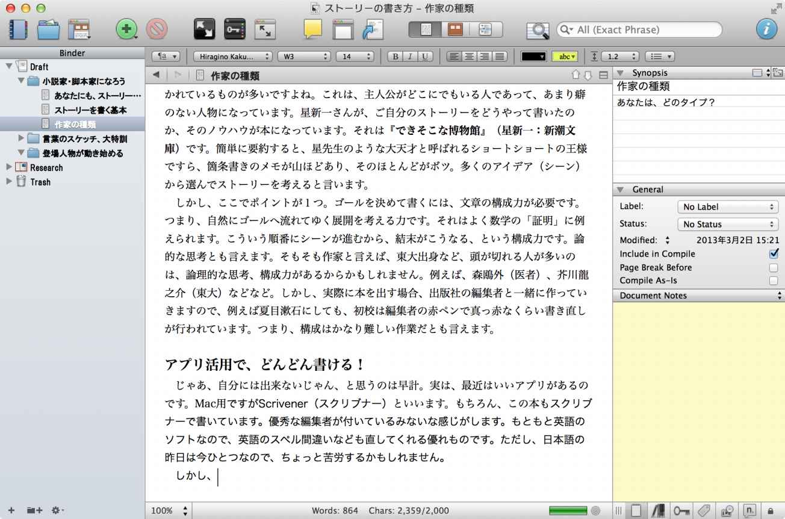
このScrivenerは、（英語用だが）小説から脚本まで対応した執筆用アプリです。僕自身、25年以上の執筆経験がありますが、若い時にこのアプリに出会っていれば、もっと沢山のストーリーが書けたのではないかと思います。
ただし、英語ソフトなので、日本語では使いにくい部分も多いし、そもそも縦書きに対応していなので、このアプリだけで小説を仕上げるのは無理です。ただし、特に長編小説や脚本の様にシーンが多くて構成が複雑になる作品では、ともて役に立ちます。
ちなみに、先の画面を簡単に説明すると、画面左側の灰色の部分が「Binder（バインダー）」と書かれています。つまり、ベージ構成がリストになります。フォルダマーク（小説家・脚本家になろう）が「章」、その下の「あなたにも、ストーリー」と書かれている部分が「節」で、本文になります。
画面の真ん中は、本文を書くエディター（ワープロ）。写真なども貼れますし、タイトルや見出しなど、文字修飾もできます。
画面右側は、各章や各節のメモ書き。つまり、あらすじを書いておいたり、参考にしたWEBページのURLを書いておいたりします。
□ 第二項 Scrivener、とりあえず使ってみよう
まず、Scrivenerを購入しましょう。Windowsの場合は、Google等で検索して購入してください。Macの場合にはApp Storeから購入できます。
つぎに、日本語で使い易くなるように、書式の設定を行います。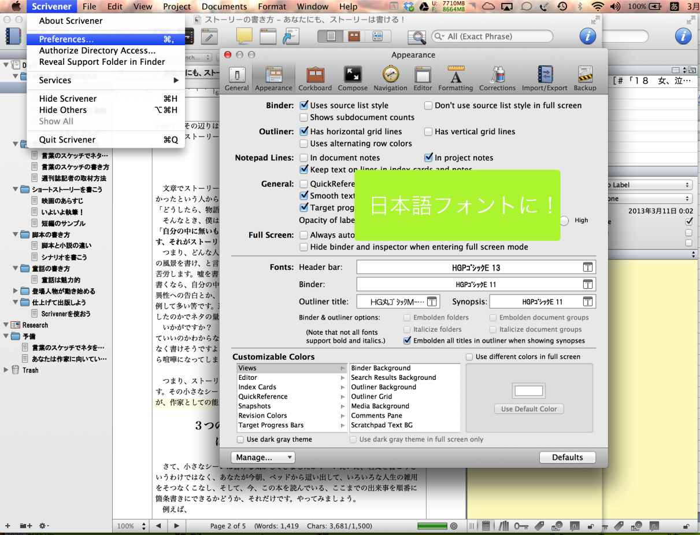この図のように、「Preferences」を開いて、フォント類を全部日本語フォントに変更します。
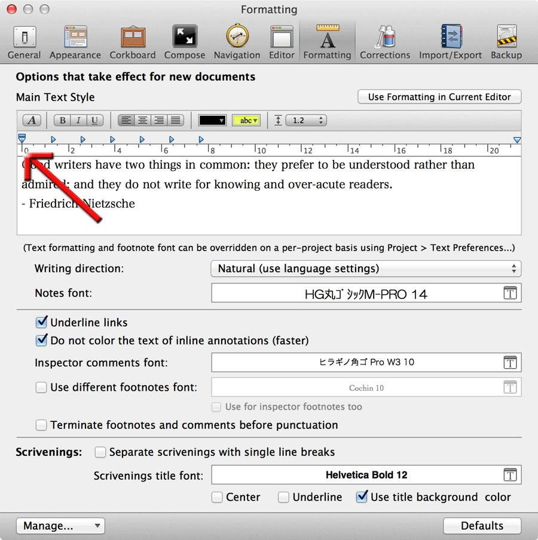
同じく、PreferencesのFormatでフォントを変えます。赤矢印部分が重要です。ここの▼を左端に寄せておきます。これは行頭の自動字下げです。自動字下げをさせないために、▼を左に寄せるのです。なお、出力（Compile）の時にも、出力用のフォーマットがあるので、そちらも変更する必要があります。
□ 第三項 Scrivenerで執筆しよう
さて、実際に執筆してみましょう。
まず、左側の「Binder」上で右クリックして「Add」「New Text」を選びます。すると新しいページが出てくるので、執筆します。使い方はWordとほぼ同じです。Kindleのような電子書籍にはページという概念がありません。ページ数は、読者が設定している文字サイズで変わってしまうからです。
そのかわり、電子書籍では「章」とか「節」の使い分けが重要になります。「章（もしくは節）」ごとに書き進むのがベターです。そこで、Scrivenerでは、Binder上の「章」「節」を増やしていきます。いわゆるアウトラインエディターみたいですね。
詳しくは、Scrivenerの日本語説明書を参照してください。
Scrivener日本語チュートリアルhttp://blog.yostos.org/2008/06/scrivener.html
□ 第四項 ScrivenerでKindle形式に出力しよう
Scrivenerの優れている点に、Kindle形式での出力があります。Fileメニューの一番下「Compile...」でKindle形式で出力できます。
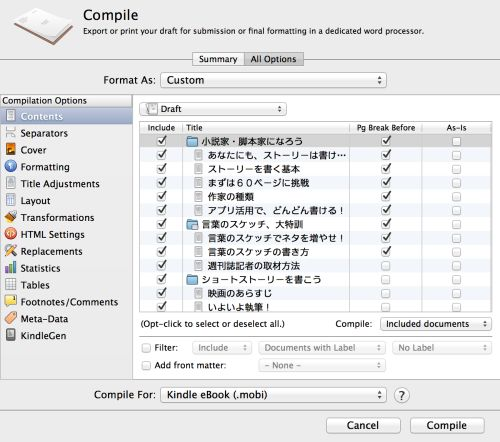
Kindle形式で出力する場合、Amazonから「KindleGen」というアプリを入手する必要があります。
□ 第五項 日本語で出力する場合のポイント（横書きの場合）
さらに、日本語で出力する場合、「第二章」というように、自動的に番号を振ってくれる機能があるので、それを使います。デフォルト（初期状態）だと「Chapter一」のように英語と漢数字が混じってしまいます。
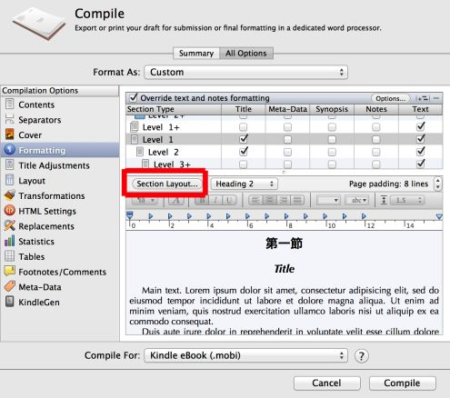
「Compile...」「Formatting」で赤枠を押します。
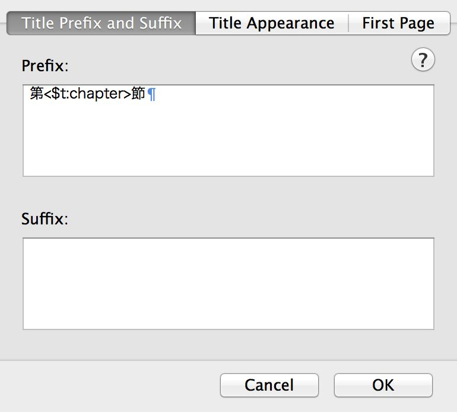
ここの「Prefix:」を変更します。＜＞の外側を日本語にします。
なお、１にすると「第１章」というように英数字になります。
ただし、縦書きで電子書籍を作る場合には、Scrivenerで章立てを設定せず、縦書きのできる一太郎で設定しています。詳しくは、後ほど説明します。
□ 第六項 その他に機能満載！
Scrivenerですが、非常に機能満載。ただし英語用なので、日本語では動作しないものもあります（シナリオ形式など）。それでも、非常にいいアプリなので、使ってみることをお勧めします。なぜなら、作家（脚本家）の技をアプリにしているので、先人の知恵を使って執筆できるからです。ぜひ、ぜひ！
■ 第三節 一太郎を使おう
□ 第一項 縦書き文章を書くなら「一太郎２０１５」が最高！
さて、小説全体の構成を考える上では、先ほどの Scrivenerが最高の助手になってくれます。とにかく、大量の原稿を効率よくまとめるには、Scrivenerしかない。でも、日本語を扱うには、やはり日本語に完全対応したアプリが必要です。
そこでオススメはJustSystemの「一太郎 ２０１５（２０１５年２月現在）」です。縦書きはもちろん、ルビ（ふりがな）や目次作りなど、様々な機能があり、MicrosoftのWordよりも、さらに日本語を使うのに最適化されています。ぼくも２０年ぶりに使い始めたのですが、いやぁ、すばらしいアプリです！ ただし、Windowsでしか動きません。僕はMacにFusion（VMware社）というアプリを入れてMac上でWindows8を動かし、そこで一太郎を使ってます。Fusionを使うとWIndows用アプリがMac用アプリみたいに動作します（ユニティモード）。Fusionが５０００円弱、WIndows 8が８０００円強。両方で１万３千円程度です。僕は、プロの作家の自覚があるなら、このくらいの投資はした方がいいと思います。
以下、一太郎の利点をまとめました。
○ １：縦書きが可能
○ ２：ルビや傍点など、日本語独自の表現が使える。
○ ３：最新のePub形式（電子書籍形式）で出力できる。
○ ４：文章の校正（誤字脱字の発見など）ができる。
○ ５：書籍内のリンク
○ ６：外部URLへのリンク
○ ７：写真等の配置
□ 第二項 Scrivenerと一太郎の連携方法
構成や資料整理が適しているのではScrivenerです。ところが、縦書きができないなど日本語で使うにはちょっと問題があります。そこでScrivenerで書いた小説を一太郎で仕上げるという流れが必要になります。そこで、Scrivenerと一太郎の連携のコツを紹介します。
○ Scrivenerでは「章」の設定をしない。
○ Scrivenerで行う文字修飾は、太字程度で。
○ Scrivenerではページリンクは行わない。
○ ScrivenerのCompileでWord形式（DOC）出力を行う。
○ Scrivenerで画像（JPEG、PNG）を貼る。
○ 一太郎で「章・節・項」を設定する。
○ 一太郎で文字・段落修飾を行う（シナリオ形式など）。
○ 一太郎でルビをふる。
○ 一太郎で目次を作る。
○ 一太郎で画像のファイルサイズ（148kb以内）を調整する。
□ 第三項 一太郎から Kindleで出版！
２０１３年３月末時点で、一太郎はKindle形式のmobiファイル出力が可能になっています。
その方法は２つあって、１つは次節のように専用アプリ（KindleGen）をダウンロードして、自分で変換する方法。もう１つは、販売サイトに登録して、確認用ファイルを生成してもらい、それでテストすることです。テストして大丈夫なら出版開始することができますよ。Fileメニューから「他形式で出力」を選べば、Kindleファイルになります。ただし、AmazonからKnndleGenを入手して、一太郎に登録する必要があります。詳しくは一太郎のヘルプをご覧ください。というか、ダウンロードしたKindleGenを適当なフォルダに置いて、それを一太郎で呼び出すために、ファイルの場所（フォルダ）を選ぶだけです。
いずれにせよ、実機で自分の作品を読むのは、とっても快感！ 楽しくてたまりませんよ。僕は、実機に自作を入れて、推敲していますが、それも効率がいい！ 印刷して製本された自分の本を手にした時と同じ感動があります。いや、それ以上かな？ なぜなら、自分で全部作っているからですよね。
とにかく、自分の文章がPaperwhiteで読めると、感動〜〜〜〜〜！
ぜひ、味わってください。実機で読んでみると、どこで改行すべきとか、いろいろなアイデアも湧いてきますよ！
■ 第四節 無料で日本語の縦書き
□ 第一項 無料で縦書き出力したい
小説など、縦書きで出版するにはどうしたらいいでしょうか？
結論を言えば、JustSytemの「一太郎 玄」を使うのが一番簡単です。ルビ（ふりがな）や文字の強調など、小説に必要なものはすべてあります。目次も作れるし、挿絵も入れられるし、WEBサイトへリンクすることもできます。
● フリーソフトで縦書きKindle
お金をかけなくても、小説形式で出力することができます。青空文庫をご存知でしょうか？ 作家の死後一定時間が過ぎて著作権が切れた作品を有志が電子化して、それを無料で読めるものです。実は、この青空文庫は、ルビや文字修飾などが縦書きでできるような仕組みをもっています。しかも、特別なワープロは必要ありません。
桜風《はるかぜ》 涼《すずし》
と書いて電子書籍形式に直すと、
桜風 涼
となります。
このように、漢字の後に《》でふりがなを記述するとルビになります。他にも太字や文字サイズを大きく（小さく）など、同じようにカッコでくくって記述するだけです。詳しくは青空文庫のホームページをご参照ください。
Windowsならメモ帳などで書きます。もちろん、Wordで書いてもオーケー、ただし保存する時に「TXT」形式にします。また、Wordの機能でルビや太字などを付けても反映されません。文字修飾は、前述のようにカッコを使った青空文庫形式にします。
● AozoraEpub3とKindleGenでKindle形式に
青空文庫形式で小説を記述したら、今度はフリーソフトで電子書籍形式に変換します。AozoraEpub3というアプリ（JAVAアプレット）です。Windows、Mac、Linuxで動きます。
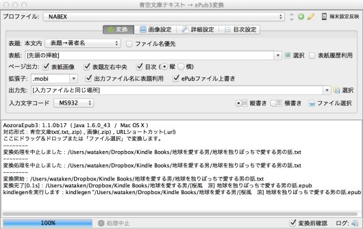
起動したら右上の「端末設定反映」で「Kindle PW」という設定に変更するだけ。先ほど作った青空形式のテキストファイルをAozoraEpub3をドラッグ＆ドロップするだけです。見出しを作ってあれば目次も自動生成してくれます。また、小説（テキストファイル）の１行目が題名、２行目が著者名として扱われます。
変換はあっという間です。小説のファイルと同じフォルダにePub形式（汎用の電子書籍形式）のファイルが作られます。出来たファイルはそのままではKindleで出版することは出来ません。そこでAmazonが無料配布しているKindle形式への変換ソフトを使います。といっても、技術者向けのアプリなのでちょっと使いにくいのは事実。
あなたがWindowsユーザーなら簡単です。AozoraEpub3をダウンロードし、解凍されたフォルダ内にKindleGenを移動しておきます。そうしておけば、AosoraEpub3がKindleGenを使って自動的にKindle形式（mobi）に変換してくれます。
一方、Macの場合も、本当はWindowsと同じように自動的にKindle形式にしてくれるはずなのですが、僕はうまくいかないので、次のようなやり方をしています。
１：AozoraEpub3を起動し、小説ファイル（TEXT形式）をドラッグ＆ドロップ
２：Finderの「アプリケーション」から「ターミナル」を起動
３：KindleGenをターミナル画面にドラッグ＆ドロップ
４：１で出来たファイル（題名＋著者名）をターミナルにドラッグ＆ドロップ
５：returnキーを押す
これでKindle形式のファイルが完成です。
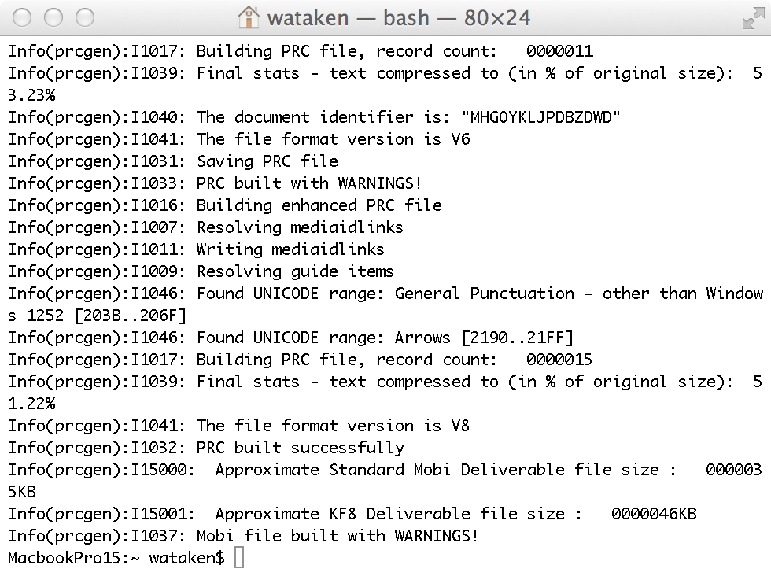
Macの場合、KindleGenはターミナル上で動かす。ターミナルを開いて、KindleGen、小説ファイル（ePub）を順番にドラッグしてreturnキーを押すだけ！
これでKindle用のファイルが出来上がりました。もちろん、ePub形式の方（AozoraEpub3で出来たファイル）は、Koboやその他の電子書籍用ファイルとしても使えます。
ただし、問題点は、外部リンクができない（僕が知らないだけかも）ので、自分のホームページや作品一覧や著者ページ（AmazonではKindle等の作家の紹介ページが無料で作れます）へジャンプできません。
□ 第二項 でも、やはり一太郎が一番！
前述の２つのアプリで、縦書き（ルビや文字修飾、段落修飾も可能）な電子書籍形式が作れました。ただ、僕がこれまで１０本ほど出版した中には、iPhoneやiPadで表示不能な本になってしまうケースが２件ありました。原因は文字コードらしいのですが、どんなに探ってもどの文字か分かりませんでした。Amazonに調査を依頼してもなかなか改善できませんでした。
ところが、同じ原稿を一太郎に入れて編集し直し、ePub形式で出力してやると、ちゃんとiOS（iPhoneなど）でも読める形式になりました。ということで、結局のところ、安心して出版するには一太郎を使うのが一番いいという結論です。
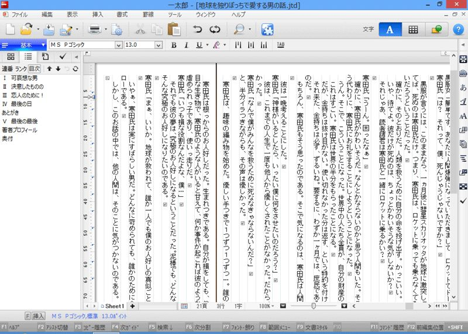
ワープロとしてはオーソドックスな作りですよね。左側に章立ての一覧が出せます。いわゆる「アウトライン」です。章立ての連番（数字）も自動付加なので、章の入れ替えをしても番号は正しくふり直されます。本当は、Scrivenerのように、章立てをタイル表示してくれるといいんだけどなぁ。
■ 第五節 動作確認をして出版しよう
□ 第一項 実機で動作確認が必須
Kindle形式（mobi）ができたら、Kindle Paperwhiteなどでどのように表示されるか確認してみましょう。一般の人に読んで頂くためには、必ず実機で確認することが必要です。パソコン画面では分からないことがいくつかあるからです。たとえばルビが長過ぎて格好悪かったり、見出しがきちんと設定されず、目次がめちゃくちゃになったり、挿絵が汚かったり、とにかく、見てみないと分かりません。
僕はKindle小説はPaperwhiteで、写真集や一般書籍（挿絵が重要なもの）はiPad miniで確認しています。
● Paperwhiteで確認しよう
Paperwhiteをパソコンにつなぐと、USBメモリーのように見えます。Documentsというフォルダがあるので、そこに、前節で作ったKindle形式（mobi）の小説ファイルをドラッグ＆ドロップします。このとき、フォルダ内の他のファイルを消したり名前を変えたりしないように。これはあなたが購入した書籍そのものだからです。
あなたの小説ファイル（mobi）をPaperwhiteに入れたら、接続を解除（パソコン側から接続解除）します。するとPaperwhiteのホーム画面に、あなたの小説が出てくるはずです。Paperwhiteは動作が遅いので、表示されるまでちょっと待つかもしれません。
あとは書籍を読むのと同じように、あなたの作品を読みながら内容確認をしましょう。ちなみに僕の場合、作品の推敲はPaperwhite上で行っています。読者と同じ画面で読むと、改行の位置が悪いとか、誤字が簡単に見つけられたりと、非常に効率がいいです。誤字や書き直しをしたい部分は、Paperwhiteのメモやハイライト機能で印をつけておき、後でパソコン上の元原稿を直すという作業を繰り返しています。
● AmazonのKindleページで出版の準備をしよう
心行くまで推敲が終わったら、いよいよ出版の準備です。
まず、Amazonで出版社としての契約（登録）を行います。個人でOKです。ぼくは会社を持っているので、会社として登録しました。およそ住所氏名を登録するだけです。なお、登録だけで出版可能ですが、契約先はAmazon本社、つまりアメリカになります。課税もアメリカで行われます。アメリカの課税は所得に対して３０％となり、かなりの重税です。しかし、著者が日本在住であると、非課税になります。そのための非課税手続きが必要です。インターネットで米国IRSに申告して、非課税の認定を受けなければなりません。といってもそれほど難しくありません。ネットで申告用紙（フォームSS-4）をダウンロードして、それをFAXします。１０日ほどで非課税通通知書が届くので、そこに記載されている納税番号を課税申告書（フォームW-8BEN）に記載してAmazon本社へ郵送します。ネットで「Kindle 非課税 申告」などで検索すると、詳しい記入例が見つけられるのでまねして書くだけです。なお、法人の場合も、基本的には同じ流れです。
登録が終わると、作品を登録管理する画面が使えるようになります。ここで新規に作品を登録します。詳しくはAmazonの解説ページをご覧ください。
さて、出版するにあたって、もう１つ作っておかなければならないものがあります。それは前述した「表紙画像」です。表紙で売上が変わるので、頑張って作る必要があります。写真用アプリなどで作るといいでしょう。画像形式はJPEGです。
ぼくは1600×2400で作っています。
あとは管理画面に従って入力するだけOK。Amazonでは５分で出版OKとのこと。
□ 第二項 さらに実機テスト
表紙と小説ファイル（mobi）を登録してアップロードすると、数分で公開用のファイルが出来上がります。このファイルはダウンロード可能なので、絶対に、絶対にダウンロードして、先ほどと同じように実機（Paerwhiteなど）で確認しましょう。
どうでしょうか？ 今回は表紙が付きました。目次やページ送りなど、大丈夫でしょうか？ とくに一般書籍で挿絵が多い場合には、動作がおかしくなることもあるので、必ず確認しましょう。
□ おわりに
ストーリーをゼロから書くのは難しいと思う瞬間が、いろいろな場面で出てきます。書き始めようと思ったとき、アイデアはあるのに文章にできないとき、ただ文章だけが長くなり面白くないと感じたとき。
しかし、そんなときには「３つの事実１つの結末」これを頭に描けば、きっと打開できるはず。がんばってストーリーを書き、Kindle出版で大もうけをしてください。
あとがき
作家を目指す方へ
作家になりたいですよね！ 物書きだけで食べられたら、それは本当に幸せなことだと思います。正直にいえば、小説で食べるには大手出版社に出してもらうのが一番だと思います。でも、コンテンツはどう転ぶかわかりません。今から２０年ほど前、ぼくはソニーのSo-netの立ち上げ時に契約プロデューサーとして仕事を始めました。当時の上司はソニー・ミュージック・エンターテインメントから出向できた吉川さんでした。
「けんちゃんさ、俺たちはイチローじゃなくていいんだよ。４割もヒットを打つ必要はないのさ。１割のヒットでビルが建つ、それがコンテンツ事業なんだよ」
今でもその言葉が浮かんできます。確かに、僕の人生でも１０作に１本が売れて、数年はそれで食べられた、という感じです。ですから、作品は量産するべきです。アイデアなんて枯渇しません。人生が進めば進むほど書かねばならないことが増えていきます。むしろ、それを書く時間があるかどうかが問題になるでしょう。
ですから、みなさん、とにかく書きましょう。言葉のスケッチさえしてあれば、絶対に書けるようになります。言葉のスケッチなしに書くことなんてできません。
ぜひぜひ、言葉のスケッチ１０００本、目指してください。
２０１３年３月吉日
桜風涼
著者プロフィール
桜風 涼
１９６５年生 慶応義塾大学卒
日本児童文芸家協会会員
作家・脚本家・演出家
１９才より進学塾で専任講師（社員）として教壇に立ち、童話作品で入賞を機に、２０代後半より週刊誌記者に転身。
童話アニメーションでソネット・クリエーターガレージの最優秀賞。
劇場映画「ベースボールキッズ」で２００３年文部科学省選定作品。
第３種放射線取扱主任者の資格を持つ等、幅広い活動。
著者シリーズ作品（桜風涼 Kindle本）
【酒を飲む酒】２５８円
男心を知りたければ、この本を読んで欲しい。
５０歳を目前に、仕事に行き詰まり人生に疲れた男が、外国人が多く集まるバーで、３人のいい女と出会う。モテないはずの男が、いい女の気を引く瞬間が訪れ、その時間がゆっくりと流れてゆく。
その時の男の心理、女それぞれの心理を独特のタッチで描いてゆく。
男が女を好きになる瞬間。
そして冷めてゆく瞬間。
そして、いい女にモテる瞬間。
そういった人生の一コマ一コマを読み解く先に、新しい人生観が開けるはず。
日本児童文芸家協会会員の桜風涼の、物語のような世界観で、男性心理の奥底を描写してゆく一冊。
【教えて候】９９円
塾講師は、魅力的である。
いい教師に出会えれば、人生が変わる。
子どもたちを成長させるために授業をしている。
しかし、人生はそう簡単ではない。
このストーリーは、塾講師の心の中を見せる、ドキュメンタリーかもしれない。
いい教師を見つけるヒントになる作品だ。
人間の優しさを信じられなくなったら読む話。
寒田（かんだ）氏が目を覚ますと、人間爆弾にされてしまっていた。
全人類を救うための爆弾として巨大彗星に打ち込まれるのだ。
人柱になった男がいかに人類を愛しているかをウイットで描き出す本格派ショートショート。
ブラック過ぎて、笑ってしまう。
しかし、人間って、こんなものだ、と思わず引き込まれてしますはず。
日本児童文芸家協会会員の桜風 涼の童話テイストなショートショート。
最後の最後で、ドキリとさせられる！
【試験管を愛する男の話】９９円
社会的弱者へのエール！
ある製薬会社に勤める天才博士の身に起こる奇想天外な出来事。
人間の責任感とは何か、そして優しさとは何か？
それを無口な博士が教えてくれる。
ある日起こった薬害事件。
その原因を探るうちに、全世界の人間があっという間に...。
笑ったり感動したりすると死んでしまうという恐ろしい病気に、人類はどう対処したのか？
その結末や如何に？
【恋の奇跡を見つけた女の話】１００円
主人公は、恋を忘れかけた30代の独身女性。
ある朝目覚めると、机の上には古ぼけた望遠鏡があった。
「ぼくを直して下さい」
望遠鏡の言葉に従ってゆくと、不思議な喫茶店にたどり着く。
出されたメニューには、『奇蹟を信じる恋心が温まるコーヒー』。
望遠鏡を磨くごとに、奇跡が訪れるのだが。
恋する事に臆病になってしまった女性に向けた、ブラックユーモアたっぷりの短編作品です。
ある日、目が覚めると、暗い石壁の部屋の中だった。
そこには全裸の女が鎖で吊されていた。
その女は、男を出口へと誘う。
しかし、男は夢の中で落ちてゆくような気がしていた。
人間の「生と死と性」をテーマに、ブラックなショートショートにまとめた作品です。
奥付
４０代からでも作家になれる！
誰でも書ける「ストーリーの書き方・入門」
http://nabex.jp/
２０１３年3月２０日 発行（Ver.002.1）
著 者 桜風 涼
発行人 渡辺健一
発行所 株式会社ナベックス
千葉県千葉市中央区新千葉２の８の９の３Ａ
電 話 ０４３（２４５）１９８４
(C)2013 Harukaze Suzushi